Mucho más que
resolver un cubo.
Tu espacio para aprender a resolver el cubo de Rubik y otros puzzles de twisty. Desde tus primeros movimientos hasta métodos avanzados de speedcubing.
Estadísticas
TIMER SPEEDCUBING
Plano 2D (Desplegado)
Modelo 3D Interactivo
Toca la pantalla o presiona Espacio para Iniciar / Pausar
Presiona R para Reiniciar tiempo actual
Historial de Resoluciones
- Aún no has registrado ninguna resolución.
NOTICIAS
UN RÉCORD MUNDIAL A SUS 9 AÑOS |
Teodor Zajder, de Polonia, logró romper la barrera de los tres segundos al resolver el Cubo de Rubik. El talentoso niño, que tiene solo nueve años, ha causado una gran sensación resolviendo el cubo en 2.76 segundos. |

|
Pinchar en la imagen para acceder a la noticia. |
La niña de 6 años que bate el récord del Cubo Rubik 2 veces en 3 días |
El Cubo Rubik en solo 4,27 segundos. Esa es la hazaña que logró, con 6 años, Lian Yunzhi. En solo tres días, la niña batió el récord mundial femenino dos veces e hizo historia al convertirse en la única competidora en resolver el famoso y colorido cubo en un tiempo promedio inferior a 4,5 segundos. En el último año, Lian ha dedicado entre dos y tres horas diarias a practicar algoritmos buscando soluciones para resolver el cubo. |
|
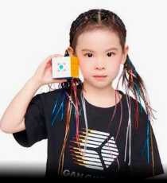 |
Pinchar en la imagen para acceder a la noticia. |
CONCEPTOS BÁSICOS
Fundamentos para resolver el Cubo de Rubik
1. Anatomía y Estructura del Cubo
El cubo de Rubik 3x3 está compuesto por 26 piezas visibles organizadas en tres tipos:
- Centros (6 piezas): Tienen una sola pegatina. Estructuralmente están fijos al núcleo interno y determinan el color definitivo de cada cara. No cambian de posición relativa entre sí.
- Aristas (12 piezas): Tienen dos pegatinas y se sitúan entre dos centros.
- Esquinas (8 piezas): Tienen tres pegatinas y ocupan las esquinas del rompecabezas.
Esquema de colores estándar (WCA): El blanco es opuesto al amarillo, el verde al azul, y el rojo al naranja. Con el blanco arriba y el verde al frente, el color rojo siempre queda a la derecha.
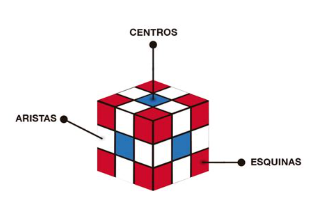
2. Notación Internacional (WCA)
Para seguir algoritmos y guías de resolución se utiliza la notación estándar basada en las iniciales de las caras en inglés:
U(Up) - Cara superior |D(Down) - Cara inferiorF(Front) - Cara frontal |B(Back) - Cara posteriorR(Right) - Cara derecha |L(Left) - Cara izquierda
Modificadores de giro: La letra sola significa un giro de 90° en sentido horario. Si lleva comilla (ej. R'), el giro es antihorario. Si lleva un '2' (ej. U2), se realiza un doble giro (180°).
3. Estructura por Capas y la "Corona"
El aprendizaje se fundamenta en el método Layer-by-Layer (Capa por Capa), resolviendo el cubo por tres niveles horizontales de abajo hacia arriba en lugar de completarlo cara por cara.
Para avanzar correctamente es vital comprender la Corona: no basta con completar los colores de una cara (como la blanca), sino que los colores laterales de esas piezas deben coincidir perfectamente con los centros adyacentes.
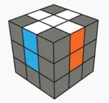
4. Tipos de Movimientos y Algoritmos Base
Existen dos acciones fundamentales sobre las piezas:
- Orientación: Rotar una pieza sobre su propio eje para que el color correcto apunte hacia arriba o hacia la cara adecuada.
- Permutación: Trasladar una pieza de un lugar a otro dentro del cubo.
Un algoritmo es una secuencia ordenada de giros que modifica piezas específicas sin desarmar lo que ya se ha resuelto. El disparador o trigger más conocido es el Sexy Move (R U R' U'), fundamental por su rapidez e integración en fases más avanzadas como CFOP.
5. Paridad y Familias de Rompecabezas
Los rompecabezas se clasifican según su orden:
- Cubos Impares (3x3, 5x5): Tienen centros fijos inamovibles que sirven de guía continua.
- Cubos Pares (2x2, 4x4): Carecen de centros fijos y pueden presentar paridades (estados o bloqueos físicos imposibles de ver en un 3x3).
Mediante el principio de reducción, los cubos grandes (4x4, 5x5, Megaminx) se resuelven agrupando centros y aristas hasta convertirlos conceptualmente en un cubo 3x3 tradicional.
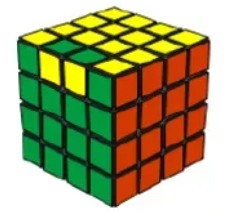
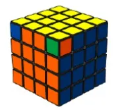
6. ¿Por dónde empezar? Hoja de Ruta Recomendada
Aprender a resolver el cubo de Rubik es un proceso progresivo. Sigue este orden estructurado:
- Método Principiante (Capa por Capa / LBL): Punto de partida indispensable con 5 o 6 algoritmos sencillos.
- Transición a CFOP / Fridrich Reducido (4LL): F2L Intuitivo, 2-Look OLL (9 algoritmos) y 2-Look PLL (6 algoritmos).
- CFOP Completo: Full PLL (21 algoritmos) y Full OLL (57 algoritmos).
- Submétodos Avanzados y Sets de Optimización: COLL, WV, SV, VLS y ZBLL.
Para afianzarlos correctamente en la memoria muscular: aprende máximo 1 algoritmo al día, ejecútalo despacio, descompón el algoritmo en triggers (ej. R U R' U') y practica la repetición espaciada.
NOTACIÓN OFICIAL WCA
1. Capas Principales (3x3)
Para interpretar un algoritmo, primero sostenemos el cubo en una orientación fija. Cada letra representa una cara basada en sus iniciales en inglés. El giro estándar (la letra sola) se realiza en sentido horario mirando esa cara de frente.

U(Up): Capa SuperiorD(Down): Capa InferiorF(Front): Capa FrontalB(Back): Capa TraseraR(Right): Capa DerechaL(Left): Capa Izquierda
B o D, imagínate mirando esa cara directamente de frente y gira en la dirección de las agujas del reloj.
2. Modificadores de Giro
Cualquier capa puede tener variaciones según los símbolos que acompañan a la letra:
- Sentido horario (ej.
U): Giro de 90° a favor de las agujas del reloj. - Sentido antihorario (ej.
U'): Lleva un apóstrofe (prime). Giro de 90° en contra de las agujas del reloj. - Doble giro (ej.
U2): Giro de 180° en cualquier sentido. - Capa doble (ej.
Uwou): Gira la capa indicada junto con la capa adyacente interna.
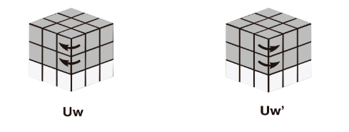
3. Capas Centrales (M, E, S)
Se utilizan principalmente en métodos avanzados (como Roux) o algoritmos específicos:
- Capa
M(Middle): Situada entreLyR. Su sentido horario sigue a la caraL(hacia abajo). - Capa
E(Equator): Situada entreUyD. Su sentido horario sigue a la caraD(hacia la derecha). - Capa
S(Standing): Situada entreFyB. Su sentido horario sigue a la caraF.
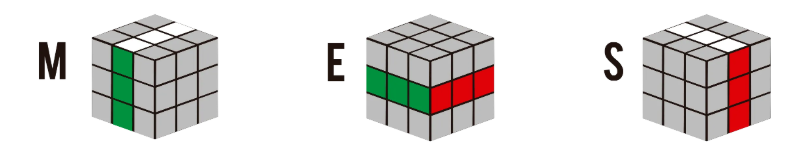
4. Rotaciones del Cubo (Ejes X, Y, Z)
Indican que se debe reorientar el cubo completo en el espacio sin deshacer ninguna capa:
- Eje
x: Rota todo el cubo siguiendo el sentido de la caraR(hacia arriba/atrás). - Eje
y: Rota todo el cubo siguiendo el sentido de la caraU(hacia la izquierda). - Eje
z: Rota todo el cubo siguiendo el sentido de la caraF(hacia la derecha/de lado).
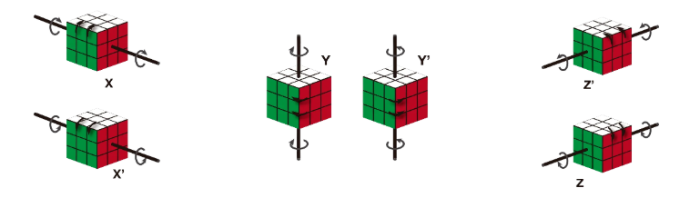
TUTORIAL 2X2
PARTE 1 Método Principiante Paso a Paso
- Armar la Primera Capa. El objetivo es juntar las 4 esquinas blancas, asegurándote de que los colores laterales adyacentes también coincidan entre sí.
- Busca la pieza base: Localiza una esquina blanca y colócala en la esquina superior izquierda de la cara frontal.
- Ubica la siguiente pieza: Busca en el cubo otra esquina que tenga blanco y el mismo color lateral que tu pieza base.
- Inserta la pieza: Colócala justo debajo de donde debe ir y aplica la secuencia de inserción desde la derecha:
- Secuencia de inserción: R' D' R D (Repite de 1 a 5 veces).
- Orientar la Capa Superior. Voltea el cubo de modo que la cara blanca quede abajo. El objetivo es hacer que todas las pegatinas amarillas queden mirando hacia arriba.
- Algoritmo de orientación: R U R' U R U2 R'
- Si tienes 1 esquina amarilla arriba: Colócala en la esquina inferior izquierda de la cara superior y ejecuta el algoritmo.
- Si tienes 0 esquinas amarillas arriba: Busca una pieza con pegatina amarilla en la cara lateral izquierda mirando hacia ti y ejecuta el algoritmo.
- Si tienes 2 esquinas amarillas arriba: Coloca las dos esquinas amarillas en la parte posterior y ejecuta el algoritmo.
- Permutar la Capa Superior. Con la cara amarilla completa arriba y la blanca abajo, observa los laterales:
- Caso A: Tienes 2 esquinas contiguas del mismo color.
- Gira la capa superior hasta hacerlas coincidir con su color y ponlas hacia atrás.
- Algoritmo de permutación: R' F R' B2 R F' R' B2 R2
- Caso B: Ninguna esquina contigua coincide.
- Aplica R' F R' B2 R F' R' B2 R2 desde cualquier posición.
- Esto creará una pareja coincidente (Caso A). Alinea hacia atrás y repite.
- Caso A: Tienes 2 esquinas contiguas del mismo color.
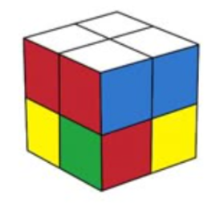
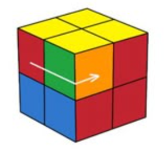
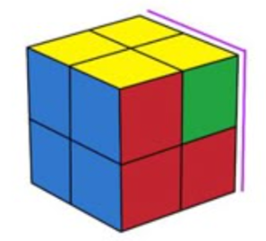
LBL Método LBL Completo (7 Casos OLL de 2x2)
Orientación de la última capa en 1 solo paso tras completar la primera capa blanca.
Sune
- R U R' U R U2 R'
- y L U L' U L U2 L'
Anti-Sune
- R U2 R' U' R U' R'
- y' R' U' R U' R' U2 R
H (Faros Dobles)
- R2 U2 R U2 R2
- F (R U R' U')2 F'
Pi (Faros y Columnas)
- R U2 R2 U' R2 U' R2 U2 R
- F (R U R' U') F'
T (Faros Horizontales)
- R U R' U' R' F R F'
- F R U R' U' F'
U (Faros Frontales)
- F R U R' U' F'
- R2 U2 R' U2 R2
L (Diagonales)
- F R' F' R U R U' R'
- R U R' U' R' F R F'
ORTEGA Método Ortega Completo (5 Casos PBL)
Permutación simultánea de ambas capas (Permutation of Both Layers) tras hacer una cara blanca (no requiere capa perfecta).
Ambas Capas Permutación Adyacente (Barra / Barra)
- R2 U' B2 U2 R2 U' R2
- R2 U' R2 U2 F2 U' R2
Capa Superior Adyacente / Inferior Diagonal (Barra / Nada)
- R2 U R2 U' R2 U R2 U' R2
- R2 U' R2 U2 Y R2 U' R2
Capa Superior Diagonal / Inferior Adyacente (Nada / Barra)
- R2 U R2 U' R2 U R2 U' R2 y2
- R2 U' R2 U2 R2 U' R2
Ambas Capas Permutación Diagonal (Nada / Nada)
- R2 F2 R2
- y2 R2 F2 R2
Capa Superior Adyacente / Inferior Solucionada
- R' F R' B2 R F' R' B2 R2
- y2 R' F R' B2 R F' R' B2 R2
CLL Método CLL Completo (42 Casos)
Resolución directa de Orientación y Permutación de la capa superior manteniendo la capa base resuelta en 1 solo algoritmo (6 variantes para cada una de las 7 formas OLL).
CLL Sune 1
- R U R' U R U2 R'
- y L U L' U L U2 L'
CLL Sune 2
- F R U R' U' F' R U R' U R U2 R'
- R U R' U R U2 R'
CLL Sune 3
- R' F R U R' U' F' U R
- y' R U2 R' U' R U' R'
CLL Sune 4
- R U R' U' R' F R F'
- U R U R' U R U2 R'
CLL Sune 5
- R U2 R' U' R U' R'
- y2 R' U2 R U R' U R
CLL Sune 6
- F' R U R' U' R' F R
- R U R' F' R U R'
CLL Anti-Sune 1
- R U2 R' U' R U' R'
- y' R' U' R U' R' U2 R
CLL Anti-Sune 2
- R U2 R' U' R U' R' F R U R' U' F'
- R U2 R' U' R U' R'
CLL Anti-Sune 3
- y' R' U' R U' R' U2 R
- L' U' L U' L' U2 L
CLL Anti-Sune 4
- F R U R' U' F' R U2 R' U' R U' R'
- y2 R U2 R' U' R U' R'
CLL Anti-Sune 5
- y L' U' L U' L' U2 L
- R' U' R U' R' U2 R
CLL Anti-Sune 6
- R' F R F' R U2 R'
- y R U2 R' U' R U' R'
CLL H 1
- R2 U2 R U2 R2
- F (R U R' U')2 F'
CLL H 2
- F R U R' U' F' R2 U2 R U2 R2
- R2 U2 R' U2 R2
CLL H 3
- R U2 R' U' R U' R' R U R' U R U2 R'
- R U R' U R U' R' U R U2 R'
CLL H 4
- F (R U R' U')3 F'
- y R2 U2 R U2 R2
CLL H 5
- R U R' U' R' F R F' R2 U2 R U2 R2
- F R U R' U' R U R' U' F'
CLL H 6
- R U2 R2 U' R2 U' R2 U2 R
- y' R2 U2 R U2 R2
CLL Pi 1
- R U2 R2 U' R2 U' R2 U2 R
- F (R U R' U') F'
CLL Pi 2
- F (R U R' U') F'
- f (R U R' U') f'
CLL Pi 3
- U R U2 R2 U' R2 U' R2 U2 R
- y F R U R' U' F'
CLL Pi 4
- U' R U2 R2 U' R2 U' R2 U2 R
- y' F R U R' U' F'
CLL Pi 5
- R' F R F' R U2 R'
- y2 F (R U R' U') F'
CLL Pi 6
- F R U' R' U' R U R' F'
- y R U2 R2 U' R2 U' R2 U2 R
CLL T 1
- R U R' U' R' F R F'
- F R U R' U' F'
CLL T 2
- F R U R' U' F'
- y L U L' U' L' B L B'
CLL T 3
- y L U L' U' L' B L B'
- R U R' U' R' F R F'
CLL T 4
- U R U R' U' R' F R F'
- y' R U R' U' R' F R F'
CLL T 5
- U' R U R' U' R' F R F'
- y2 R U R' U' R' F R F'
CLL T 6
- F R U R' U' R U R' U' F'
- y F R U R' U' F'
CLL U 1
- F R U R' U' F'
- R2 U2 R' U2 R2
CLL U 2
- R2 U2 R' U2 R2
- y2 F R U R' U' F'
CLL U 3
- y2 F R U R' U' F'
- F R U R' U' F'
CLL U 4
- U F R U R' U' F'
- y' F R U R' U' F'
CLL U 5
- U' F R U R' U' F'
- y F R U R' U' F'
CLL U 6
- F R U' R' U' R U R' F'
- y2 R2 U2 R' U2 R2
CLL L 1
- F R' F' R U R U' R'
- R U R' U' R' F R F'
CLL L 2
- R U R' U' R' F R F'
- y F R U' R' U' R U R' F'
CLL L 3
- y F R U' R' U' R U R' F'
- F R' F' R U R U' R'
CLL L 4
- U F R' F' R U R U' R'
- y' F R' F' R U R U' R'
CLL L 5
- U' F R' F' R U R U' R'
- y F R' F' R U R U' R'
CLL L 6
- y2 F R' F' R U R U' R'
- y2 R U R' U' R' F R F'
EG-1 Método EG-1 Completo (42 Casos)
Resolución directa en 1 solo paso cuando la cara base inferior tiene una barra (intercambio adyacente en la base).
EG-1 Sune 1
- R U' R' F R U R'
- y R' F R U' R' F' R
EG-1 Sune 2
- R' F R U' R' F' R
- R U R' F' R U' R'
EG-1 Sune 3
- R U' R' F R U R'
- y R' F R U' R' F' R
EG-1 Sune 4
- R' F R U' R' F' R
- R U R' F' R U' R'
EG-1 Sune 5
- R U' R' F R U R'
- y R' F R U' R' F' R
EG-1 Sune 6
- R' F R U' R' F' R
- R U R' F' R U' R'
EG-1 Anti-Sune 1
- R U' R' F R U R'
- y R' F R U' R' F' R
EG-1 Anti-Sune 2
- R' F R U' R' F' R
- R U R' F' R U' R'
EG-1 Anti-Sune 3
- R U' R' F R U R'
- y R' F R U' R' F' R
EG-1 Anti-Sune 4
- R' F R U' R' F' R
- R U R' F' R U' R'
EG-1 Anti-Sune 5
- R U' R' F R U R'
- y R' F R U' R' F' R
EG-1 Anti-Sune 6
- R' F R U' R' F' R
- R U R' F' R U' R'
EG-1 H 1
- R U' R' F R U R'
- y R' F R U' R' F' R
EG-1 H 2
- R' F R U' R' F' R
- R U R' F' R U' R'
EG-1 H 3
- R U' R' F R U R'
- y R' F R U' R' F' R
EG-1 H 4
- R' F R U' R' F' R
- R U R' F' R U' R'
EG-1 H 5
- R U' R' F R U R'
- y R' F R U' R' F' R
EG-1 H 6
- R' F R U' R' F' R
- R U R' F' R U' R'
EG-1 Pi 1
- R U' R' F R U R'
- y R' F R U' R' F' R
EG-1 Pi 2
- R' F R U' R' F' R
- R U R' F' R U' R'
EG-1 Pi 3
- R U' R' F R U R'
- y R' F R U' R' F' R
EG-1 Pi 4
- R' F R U' R' F' R
- R U R' F' R U' R'
EG-1 Pi 5
- R U' R' F R U R'
- y R' F R U' R' F' R
EG-1 Pi 6
- R' F R U' R' F' R
- R U R' F' R U' R'
EG-1 T 1
- R U' R' F R U R'
- y R' F R U' R' F' R
EG-1 T 2
- R' F R U' R' F' R
- R U R' F' R U' R'
EG-1 T 3
- R U' R' F R U R'
- y R' F R U' R' F' R
EG-1 T 4
- R' F R U' R' F' R
- R U R' F' R U' R'
EG-1 T 5
- R U' R' F R U R'
- y R' F R U' R' F' R
EG-1 T 6
- R' F R U' R' F' R
- R U R' F' R U' R'
EG-1 U 1
- R U' R' F R U R'
- y R' F R U' R' F' R
EG-1 U 2
- R' F R U' R' F' R
- R U R' F' R U' R'
EG-1 U 3
- R U' R' F R U R'
- y R' F R U' R' F' R
EG-1 U 4
- R' F R U' R' F' R
- R U R' F' R U' R'
EG-1 U 5
- R U' R' F R U R'
- y R' F R U' R' F' R
EG-1 U 6
- R' F R U' R' F' R
- R U R' F' R U' R'
EG-1 L 1
- R U' R' F R U R'
- y R' F R U' R' F' R
EG-1 L 2
- R' F R U' R' F' R
- R U R' F' R U' R'
EG-1 L 3
- R U' R' F R U R'
- y R' F R U' R' F' R
EG-1 L 4
- R' F R U' R' F' R
- R U R' F' R U' R'
EG-1 L 5
- R U' R' F R U R'
- y R' F R U' R' F' R
EG-1 L 6
- R' F R U' R' F' R
- R U R' F' R U' R'
EG-2 Método EG-2 Completo (42 Casos)
Resolución directa en 1 solo paso cuando la cara base inferior no tiene ninguna barra (intercambio diagonal en la base).
EG-2 Sune 1
- R' U R U2 R' U R
- y2 R U' R' U2 R U' R'
EG-2 Sune 2
- R U' R' U2 R U' R'
- R' U R U2 R' U R
EG-2 Sune 3
- R' U R U2 R' U R
- y2 R U' R' U2 R U' R'
EG-2 Sune 4
- R U' R' U2 R U' R'
- R' U R U2 R' U R
EG-2 Sune 5
- R' U R U2 R' U R
- y2 R U' R' U2 R U' R'
EG-2 Sune 6
- R U' R' U2 R U' R'
- R' U R U2 R' U R
EG-2 Anti-Sune 1
- R' U R U2 R' U R
- y2 R U' R' U2 R U' R'
EG-2 Anti-Sune 2
- R U' R' U2 R U' R'
- R' U R U2 R' U R
EG-2 Anti-Sune 3
- R' U R U2 R' U R
- y2 R U' R' U2 R U' R'
EG-2 Anti-Sune 4
- R U' R' U2 R U' R'
- R' U R U2 R' U R
EG-2 Anti-Sune 5
- R' U R U2 R' U R
- y2 R U' R' U2 R U' R'
EG-2 Anti-Sune 6
- R U' R' U2 R U' R'
- R' U R U2 R' U R
EG-2 H 1
- R' U R U2 R' U R
- y2 R U' R' U2 R U' R'
EG-2 H 2
- R U' R' U2 R U' R'
- R' U R U2 R' U R
EG-2 H 3
- R' U R U2 R' U R
- y2 R U' R' U2 R U' R'
EG-2 H 4
- R U' R' U2 R U' R'
- R' U R U2 R' U R
EG-2 H 5
- R' U R U2 R' U R
- y2 R U' R' U2 R U' R'
EG-2 H 6
- R U' R' U2 R U' R'
- R' U R U2 R' U R
EG-2 Pi 1
- R' U R U2 R' U R
- y2 R U' R' U2 R U' R'
EG-2 Pi 2
- R U' R' U2 R U' R'
- R' U R U2 R' U R
EG-2 Pi 3
- R' U R U2 R' U R
- y2 R U' R' U2 R U' R'
EG-2 Pi 4
- R U' R' U2 R U' R'
- R' U R U2 R' U R
EG-2 Pi 5
- R' U R U2 R' U R
- y2 R U' R' U2 R U' R'
EG-2 Pi 6
- R U' R' U2 R U' R'
- R' U R U2 R' U R
EG-2 T 1
- R' U R U2 R' U R
- y2 R U' R' U2 R U' R'
EG-2 T 2
- R U' R' U2 R U' R'
- R' U R U2 R' U R
EG-2 T 3
- R' U R U2 R' U R
- y2 R U' R' U2 R U' R'
EG-2 T 4
- R U' R' U2 R U' R'
- R' U R U2 R' U R
EG-2 T 5
- R' U R U2 R' U R
- y2 R U' R' U2 R U' R'
EG-2 T 6
- R U' R' U2 R U' R'
- R' U R U2 R' U R
EG-2 U 1
- R' U R U2 R' U R
- y2 R U' R' U2 R U' R'
EG-2 U 2
- R U' R' U2 R U' R'
- R' U R U2 R' U R
EG-2 U 3
- R' U R U2 R' U R
- y2 R U' R' U2 R U' R'
EG-2 U 4
- R U' R' U2 R U' R'
- R' U R U2 R' U R
EG-2 U 5
- R' U R U2 R' U R
- y2 R U' R' U2 R U' R'
EG-2 U 6
- R U' R' U2 R U' R'
- R' U R U2 R' U R
EG-2 L 1
- R' U R U2 R' U R
- y2 R U' R' U2 R U' R'
EG-2 L 2
- R U' R' U2 R U' R'
- R' U R U2 R' U R
EG-2 L 3
- R' U R U2 R' U R
- y2 R U' R' U2 R U' R'
EG-2 L 4
- R U' R' U2 R U' R'
- R' U R U2 R' U R
EG-2 L 5
- R' U R U2 R' U R
- y2 R U' R' U2 R U' R'
EG-2 L 6
- R U' R' U2 R U' R'
- R' U R U2 R' U R
TUTORIAL CUBO 3X3
Parte 1: Método Principiante (Paso a Paso)
El método por capas (Layer-by-Layer) es la forma más fácil e intuitiva de aprender a resolver el cubo por primera vez. Consta de 7 sencillos pasos:
1 Cruz Blanca (con centros alineados)
El objetivo es formar una cruz blanca en la cara inferior haciendo que el segundo color de cada arista coincida perfectamente con su centro lateral.
- Truco de la Margarita: Mantén el centro amarillo arriba. Busca las 4 aristas blancas y colócalas alrededor del centro amarillo.
- Bajar la arista: Alinea el color lateral con su centro y gira esa cara 180° (
F2). Repite con las 4 aristas.
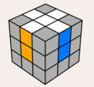
2 Esquinas Blancas (Primera Capa)
Con la cruz blanca hacia abajo, sitúa cada esquina blanca encima de su hueco correspondiente y repite R U R' U' hasta insertarla correctamente.
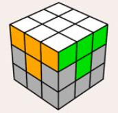
3 Segunda Capa (Capa Central)
Inserta las aristas sin amarillo formando una "T" con su centro:
- Inserción a la Derecha: U R U' R' U' F' U F
- Inserción a la Izquierda: U' L' U L U F U' F'
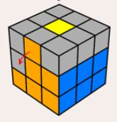
4 Cruz Amarilla
Aplica F R U R' U' F' para pasar de Punto ➔ "L" invertida ➔ Línea horizontal ➔ Cruz completa.
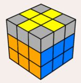
5 Alinear Cruz Amarilla
Busca 2 aristas coincidentes con sus centros, pon una atrás y otra a la derecha, y ejecuta: R U R' U R U2 R' U
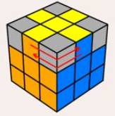
6 Colocar Esquinas Amarillas
Con una esquina bien ubicada en la posición superior-derecha-frontal, aplica: U R U' L' U R' U' L
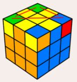
7 Orientar Esquinas Amarillas
Aplica R' D' R D consecutivamente hasta orientar cada esquina. Gira solo la capa superior para traer la siguiente esquina al mismo punto sin rotar el cubo.
Parte 2: Método CFOP Reducido (4LL)
Guía rápida para la transición del método principiante al avanzado aprendiendo solo 15 algoritmos clave.
4LL Resumen de Fases
- Cross: Cruz blanca directa abajo en la inspección.
- F2L Intuitivo: Unir parejas de esquina y arista.
- 2-Look OLL: Cruz superior (3 casos) + Esquinas superiores (7 casos).
- 2-Look PLL: Esquinas finales (T / Y) + Aristas finales (Ua / Ub / H / Z).
Parte 3: Método CFOP Avanzado Completo (Full F2L + Full OLL + Full PLL)
Compendio total de los 119 casos oficiales de CFOP Avanzado. Cada caso cuenta con sus dos visores interactivos en orden: 1° Vista 2D (Plano) y 2° Vista 3D, acompañados de múltiples opciones de algoritmos.
F2L 1. First 2 Layers Avanzado (41 Casos Completos)
Inserción simultánea de las 4 parejas de esquina y arista de los dos primeros niveles.
F2L Básicos y Fáciles (Casos 1 al 6)
F2L 1
- U R U' R'
- y' U' L' U L
- F' U' F
F2L 2
- y' U' L' U L
- U' F' U F
- y F R' F' R
F2L 3
- y' R' F R F'
- F' U' F
- U' R U' R' U y' L' U L
F2L 4
- F R' F' R
- U R U' R'
- y' L U' L' U L U' L'
F2L 5
- U' R U R' U R U R'
- U' R U2 R' U R U R'
- y' U L' U' L U' L' U' L
F2L 6
- y' U L' U' L U' L' U' L
- U F' U' F U' F' U' F
- R U' R' U R U R'
F2L con Arista en la Capa Superior (Casos 7 al 16)
F2L 7
- R U' R' U2 R U R'
- y' L' U L U2 L' U' L
- U' R U2 R' U2 R U' R'
F2L 8
- y' L' U L U2 L' U' L
- R' U' R U2 R' U R
- U L' U2 L U2 L' U L
F2L 9
- R U' R' U' R U' R' U R U' R'
- y' U' L' U L U' L' U L
- R U' R' U2 F' U' F
F2L 10
- y' L' U L U L' U L U' L' U L
- U R U' R' U R U' R'
- F' U F U2 R U R'
F2L 11
- U' R U' R' U R U R'
- y' U L' U L U' L' U' L
- R U' R' U2 R U' R'
F2L 12
- y' U L' U L U' L' U' L
- U R U' R' U R U R'
- F' U' F U F' U' F
F2L 13
- y' L' U2 L U L' U' L
- U' F' U2 F U' F' U F
- y' U' L' U2 L U' L' U L
F2L 14
- R U2 R' U' R U R'
- U R U2 R' U R U' R'
- y' L' U2 L U L' U' L
F2L 15
- y' L' U' L U L' U' L
- R U' R' U R U' R'
- F' U' F U F' U F
F2L 16
- R U L' U' L U' R'
- R U R' U' R U R'
- y' L' U' L U L' U' L
F2L Esquina Apuntando hacia Arriba (Casos 17 al 24)
F2L 17
- R U2 R' U' R U R'
- y' L' U2 L U L' U' L
- U R U2 R' U R U' R'
F2L 18
- y' L' U2 L U L' U' L
- R' U2 R U R' U' R
- U' L' U2 L U' L' U L
F2L 19
- U R U2 R' U R U' R'
- R U2 R' U' R U R'
- y' U' L' U2 L U' L' U L
F2L 20
- y' U' L' U2 L U' L' U L
- L' U2 L U L' U' L
- U R U2 R' U R U' R'
F2L 21
- R U2 R' U' R U R'
- y' L' U2 L U L' U' L
- U R U2 R' U R U' R'
F2L 22
- F' U2 F U F' U' F
- y' L' U2 L U L' U' L
- R U2 R' U' R U R'
F2L 23
- R U R' U' R U2 R' U' R U R'
- U R U2 R' U2 R U' R'
- y' U' L' U2 L U2 L' U L
F2L 24
- y' L' U' L U L' U2 L U L' U' L
- U' L' U2 L U2 L' U L
- R U' R' U R U2 R'
F2L Piezas Atrapadas en Ranuras (Casos 25 al 41)
F2L 25
- R U' R' U R U' R'
- R U R' U' R U R'
- y' L' U L U' L' U L
F2L 26
- y' L' U L U' L' U L
- R U' R' U R U' R'
- F' U F U' F' U F
F2L 27
- R U R' U' R U R'
- R U' R' U R U' R'
- y' L' U' L U L' U' L
F2L 28
- y' L' U' L U L' U' L
- F' U' F U F' U' F
- R U R' U' R U R'
F2L 29
- R U' R' F' U2 F
- y' L' U L F U2 F'
- R U' R' U R U' R'
F2L 30
- y' L' U L F U2 F'
- R U' R' F' U2 F
- y' L' U' L U L' U' L
F2L 31
- R U R' U' R' F R F'
- R U' R' U R U R'
- y' L' U L U' L' U' L
F2L 32
- R U R' U' R U2 R' U' R U R'
- R U' R' U R U2 R' U R U' R'
- y' L' U2 L U L' U' L
F2L 33
- R U' R' U' R U R' U2 R U' R'
- U' R U R' U R U R'
- y' U' L' U' L U L' U' L
F2L 34
- R U R' U' R U' R' U2 R U' R'
- U R U' R' U' R U R'
- y' U L' U L U L' U' L
F2L 35
- R U' R' U R U2 R' U R U' R'
- R U R' U' R U2 R' U' R U R'
- y' L' U2 L U L' U' L
F2L 36
- R U R' U' R U' R' U R U' R'
- R U' R' U R U' R'
- y' L' U L U' L' U L
F2L 37
- R U' R' d R' U2 R U2 R' U R
- R U R' U2 R U2 R' U R U' R'
- y' L' U2 L U2 L' U L
F2L 38
- R U R' U' R U2 R' U' R U R'
- R U' R' U R U2 R' U R U' R'
- y' L' U2 L U L' U' L
F2L 39
- R U' R' U R U2 R' U R U' R'
- R U R' U' R U2 R' U' R U R'
- y' L' U2 L U L' U' L
F2L 40
- R U R' U' R U' R' U R U' R'
- R U' R' U R U' R'
- y' L' U L U' L' U L
F2L 41
- R U' R' U R U' R' U2 R U' R'
- R U R' U2 R U R' U' R U R'
- y' L' U2 L U L' U' L
OLL 2. Orientation of the Last Layer (57 Casos Completos)
Orientación directa de todas las pegatinas amarillas en un solo movimiento.
1. Puntos (OLL 1 al 8)
OLL 1
- R U2 R2 F R F' U2 R' F R F'
- y r U R' U R U2 r' y' F R U R' U' F'
OLL 2
- F R U R' U' F' f R U R' U' f'
- r U R' U' r' R U R U' R'
OLL 3
- f R U R' U' f' U' F R U R' U' F'
- r R2 U' R U' R' U2 R U' M
OLL 4
- f R U R' U' f' U F R U R' U' F'
- M U' r' U2 r U R' U' r'
OLL 5
- l' U2 L U L' U l
- r' U2 R U R' U r
OLL 6
- r U2 R' U' R U' r'
- l U2 L' U' L U' l'
OLL 7
- r U R' U R U2 r'
- l U L' U L U2 l'
OLL 8
- l' U' L U' L' U2 l
- r' U' R U' R' U2 r
2. Formas de Rayos y Cuadrados (OLL 9 al 20)
OLL 9
- R U R' U' R' F R2 U R' U' F'
- y R' U' R y' x' R U' R' F R U R'
OLL 10
- R U R' U R U' R' U' R' F R F'
- F U R U' R' F' U R U R' U' R' F R F'
OLL 11
- r U R' U R U' R' U' r'
- y' r' U' R U' R' U R r
OLL 12
- F R U R' U' F' U F R U R' U' F'
- M U R U R' U' R' F R F' M'
OLL 13
- F U R U' R2 F' R U R U' R'
- r U' r' U' r U r' y' R' U R
OLL 14
- R' F R U R' F' R F U' F'
- r' U r U r' U' r y R U' R'
OLL 15
- l' U' L U' L' U L U' L' U2 l
- r' U' R U' R' U R U' R' U2 r
OLL 16
- r U R' U R U' R' U R U2 r'
- l U L' U L U' L' U L U2 l'
OLL 17
- F R U R' U' M' U R U' r'
- R U R' U R U' R' U' R' F R F'
OLL 18
- r U R' U R U2 r' F R U R' U' F'
- L' U' L U' L' U2 L F R U R' U' F'
OLL 19
- r' U' L U' L' U2 l F R U R' U' F'
- R' U' R U' R' U2 R F R U R' U' F'
OLL 20
- r U R' U' M2 U R U' r'
- S R U R' U' R' F R f'
3. Cruz Hecha / OCLL (OLL 21 al 27)
OLL 21
- F (R U R' U')3 F'
- R U2 R' U' R U R' U' R U' R'
- r U R' U' r' F R F'
OLL 22
- R U2 R2 U' R2 U' R2 U2 R
- R2 D R' U2 R D' R' U2 R'
- f (R U R' U') f' U' F (R U R' U') F'
OLL 23
- R2 D' R U2 R' D R U2 R
- r U R' U' r' F R F'
- y2 R2 D R' U2 R D' R' U2 R'
OLL 24
- r U R' U' r' F R F'
- F' r U R' U' r' F R
- y L2 D' L U2 L' D L U2 L
OLL 25
- F' r U R' U' r' F R
- R2 D' R U2 R' D R U2 R
- y' R' F' r U R' U' r' F
OLL 26
- R U2 R' U' R U' R'
- y' R' U' R U' R' U2 R
- y2 L' U' L U' L' U2 L
OLL 27
- R U R' U R U2 R'
- y L U L' U L U2 L'
- y2 R' U2 R U R' U R
4. Formas de C, T, I y P (OLL 28 al 46)
OLL 28
- r U R' U' M' U R U' R'
- M' U' M U2 M' U' M
OLL 29
- M U R U R' U' R' F R F' M'
- r U R' U' r' R U R U' R'
OLL 30
- F R U R' U' F' U F R U R' U' F'
- r' U2 R U R' U r
OLL 31
- R' U' F U R U' R' F' R
- y' L' U' B U L U' L' B' L
OLL 32
- L U F' U' L' U L F L'
- y R U B' U' R' U R B R'
OLL 33
- R U R' U' R' F R F'
- y' L U L' U' L' B L B'
OLL 34
- R U R2 U' R' F R U R U' F'
- f R U R' U' f' U' F R U R' U' F'
OLL 35
- R U2 R2 F R F' R U2 R'
- f R U R' U' f' R U R' U' R U R'
OLL 36
- L U' L' U' L U L' F' L F
- R' U' R U' R' U R U y R U' R'
OLL 37
- F R U' R' U' R U R' F'
- F R U R' U' F'
OLL 38
- R U R' U R U' R' U' R' F R F'
- F R U R' U' F'
OLL 39
- L F' L' U' L F L' y' R' U' R
- f R U R' U' f'
OLL 40
- R' F R U R' F' R y L U L'
- f' L' U' L U f
OLL 41
- R U R' U R U2 R' F R U R' U' F'
- y' R' U' R U' R' U2 R F R U R' U' F'
OLL 42
- L' U' L U' L' U2 L F R U R' U' F'
- R U R' U R U2 R' F R U R' U' F'
OLL 43
- f' L' U' L U f
- R' U' F R U R' U' F' R
OLL 44
- f R U R' U' f'
- F U R U' R' F'
OLL 45
- F R U R' U' F'
- f R U R' U' f'
OLL 46
- R' U' R' F R F' U R
- f' L' U' L U f
5. Formas de L y Grandes (OLL 47 al 57)
OLL 47
- F' L' U' L U L' U' L U F
- R' U' R' F R F' U R
OLL 48
- F R U R' U' R U R' U' F'
- f R U R' U' R U R' U' f'
OLL 49
- r U R' U' r' R U R U' R'
- l U L' U' l' L U L U' L'
OLL 50
- l' U' L U l L' U' L U L'
- r' U' R U r R' U' R U R'
OLL 51
- f R U R' U' R U R' U' f'
- F R U R' U' R U R' U' F'
OLL 52
- R U R' U R U' B U' B' R'
- R' U' R' F R F' U R
OLL 53
- l' U2 L U L' U' L U L' U l
- r' U2 R U R' U' R U R' U r
OLL 54
- r U2 R' U' R U R' U' R U' r'
- l U2 L' U' L U L' U' L U' l'
OLL 55
- R' U2 R2 U R' U R U2 R' F R F'
- r U R' U R U2 r' F R U R' U' F'
OLL 56
- r U R' U R U2 r' r' U' L U' L' U2 l
- F R U R' U' F' f R U R' U' f'
OLL 57
- R U R' U' M' U R U' r'
- r U R' U' M' U R U' R'
PLL 3. Permutation of the Last Layer (21 Casos Completos)
Permutación y ordenación final de todas las esquinas y aristas orientadas.
1. Solo Aristas (4 Casos)
Ua Perm
- R U' R U R U R U' R' U' R2
- y2 R2 U' R' U' R U R U R U' R
- M2 U M U2 M' U M2
Ub Perm
- R2 U R U R' U' R' U' R' U R'
- y2 R' U R' U' R3 U' R' U R U R2
- M2 U' M U2 M' U' M2
H Perm
- M2 U M2 U2 M2 U M2
- M2 U' M2 U2 M2 U' M2
- R2 U2 R U2 R2 U2 R2 U2 R U2 R2
Z Perm
- M' U M2 U M2 U M' U2 M2
- M2 U M2 U M' U2 M2 U2 M'
- y R' U' R U' R U R U' R' U R U R2 U' R'
2. Solo Esquinas (3 Casos)
Aa Perm
- x R' D2 R U R' D2 R U' x'
- y' r' F R' B2 R F' R' B2 R2
- R' F R' B2 R F' R' B2 R2
Ab Perm
- x R U' R D2 R' U R D2 R2 x'
- y r' U R' D2 R U' R' D2 R2 x'
- R2 B2 R' F' R B2 R' F R'
E Perm
- x' R U' R' D R U R' D' R U R' D R U' R' D' x
- R' U' R' D' R U' R' D R U R' D' R U R' D R2
3. Esquinas y Aristas (14 Casos)
F Perm
- R' U' F' R U R' U' R' F R2 U' R' U' R U R' U R
- y R' U2 R' d' R' F' R2 U' R' U R' F R U' F
Ga Perm
- R2 u R' U R' U' R u' R2 y' R' U R
- R2 U R' U R' U' R U' R2 D r' U r D'
Gb Perm
- F' U' F R2 u R' U R U' R u' R2
- R' U' R y R2 u R' U R U' R u' R2
Gc Perm
- R2 u' R U' R U R' u R2 y R U' R'
- y2 R2 U' R U' R U R' U R2 D' r U' r' D
Gd Perm
- R U R' y' R2 u' R U' R' U R' u R2
- R U R' U' D R2 U' R U' R' U R' U R2 D'
Ja Perm
- x R2 F R F' R U2 r' U r U2 x'
- y' L' U' L F L' U' L U L F' L2 U L
Jb Perm
- R U R' F' R U R' U' R' F R2 U' R'
- y2 L' U' L F L' U' L U L F' L2 U L
Ra Perm
- R U' R' U' R U R D R' U' R D' R' U2 R'
- y R U R' F' R U2 R' U2 R' F R U R U2 R'
Rb Perm
- R' U2 R U2 R' F R U R' U' R' F' R2
- y' R' U2 R' D' R U' R' D R U R U' R' U' R
T Perm
- R U R' U' R' F R2 U' R' U' R U R' F'
- y2 R2 U R2 U' R2 U' D R2 U' R2 U R2 D'
V Perm
- R' U R' U' y R' F' R2 U' R' U R' F R F
- z D' R2 D R2 U' R' D' R U R' D R U' z'
Y Perm
- F R U' R' U' R U R' F' R U R' U' R' F R F'
- R2 U' R' U' R U R U R U' R
Na Perm
- R U R' U R U R' F' R U R' U' R' F R2 U' R' U2 R U' R'
- z U R' D R2 U' R D' U R' D R2 U' R D' z'
Nb Perm
- R' U R U' R' F' U' F R U R' F R' F' R U' R
- R' U L' U2 R U' L R' U L' U2 R U' L
Parte 4: Submétodo COLL (Corners of the Last Layer)
COLL resuelve la orientación y la permutación de las cuatro esquinas de la última capa en un algoritmo, suponiendo que las cuatro aristas de esa capa ya están orientadas. Después puede quedar una EPLL (Ua, Ub, H o Z) para terminar las aristas.
COLL Cómo reconocer los casos
- Completa Cross + F2L y asegúrate de que las cuatro aristas de la última capa están orientadas (cruz superior hecha).
- Reconoce el patrón de orientación de las esquinas: Anti-Sune, Sune, L, U, T, Pi o H.
- Dentro de la familia, compara los colores laterales de las esquinas para identificar el caso exacto.
- Elige uno de los algoritmos listados y mantén la misma orientación del cubo que muestra el visor.
- Al terminar, comprueba las esquinas y resuelve las aristas restantes con EPLL si hace falta.
Importante: los visores muestran una configuración de referencia del caso; los algoritmos se pueden ejecutar con rotaciones de cubo indicadas en la notación. Los algoritmos alternativos pueden tener distinto número de movimientos o resultar más cómodos según tus fingertricks.
Los 40 casos COLL — vista 2D, vista 3D y algoritmos alternativos
Los casos están agrupados por patrón de orientación. Cada ficha incluye primero el visor 2D, después el visor 3D y varias opciones de algoritmo.
Familia Anti-Sune
COLL AS 1
- y R U2 R' U' R U' R'
- R' U' R U' R' U2 R
COLL AS 2
- y2 R2 D R' U R D' R' U R' U' R U' R'
- y R' U' R U' R' U R' D' R U R' D R2
COLL AS 3
- y2 R2 D R' U2 R D' R2 U' R U' R'
- R' U' F' R U R' U' R' F R2 U' R' U R U
COLL AS 4
- y2 R' U' R U' R2 D' R U2 R' D R2
- y2 R U2 R' U2 r' F R F' M' U2
COLL AS 5
- y2 r' F R F' r U R'
- R' U L U' R U L'
COLL AS 6
- R U' R' U2 R U' R' U2 R' D' R U R' D R
- R U2 r' F R' F' r U' R U' R' U'
Familia Sune
COLL S 1
- R U R' U R U2 R'
- y' R' U2 R U R' U R
COLL S 2
- y2 R U R' U R2 D R' U2 R D' R2
- r' F2 r U2 R U' r' F M' U2
COLL S 3
- L' R U R' U' L U2 R U2 R'
- M F R' F' r U2 R U2 R'
COLL S 4
- y' R U R' U R U' R D R' U' R D' R2
- R U R' U' R' F R F' r U R' U R U2 r'
COLL S 5
- R U' L' U R' U' L
- R U' r' F R' F' r
COLL S 6
- y2 R U R' F' R U R' U R U2 R' F R U' R'
- y2 R U R' U r' F R F' r U2 R'
Familia L
COLL L 1
- y' R U R' U R U' R' U R U' R' U R U2 R'
- y' R U2 R' U' R U R' U' R U R' U' R U' R'
COLL L 2
- R' U2 R' D' R U2 R' D R2
- R U R' U2 L U' R U L' U R' U2
COLL L 3
- y R U2 R D R' U2 R D' R2
- U2 R U2 R2 D' R U' R' D R2 U' R'
COLL L 4
- y F R' F' r U R U' r'
- y2 R2 D R' U R D' R' U' R'
COLL L 5
- y2 F' r U R' U' r' F R
- y x R' U R D' R' U' R D x'
COLL L 6
- y' R' U' R U R' F' R U R' U' R' F R2
- y r U2 R2 F R F' R U2 r' U2
Familia U
COLL U 1
- R' U' R U' R' U2 R2 U R' U R U2 R'
- y2 R U R' U R U2 R2 U' R U' R' U2 R
COLL U 2
- R' F R U' R' U' R U R' F' R U R' U' R' F R F' R
- y' r U R' U' r' F R2 U' R' U' R U2 R' U' F' U2
COLL U 3
- y2 R2 D R' U2 R D' R' U2 R'
- L2 D L' U2 L D' L' U2 L'
COLL U 4
- F R U' R' U R U R' U R U' R' F'
- y2 R' F2 R U2 R U2 R' F2 R U2 R' U'
COLL U 5
- R2 D' R U2 R' D R U2 R
- y2 L2 D' L U2 L' D L U2 L
COLL U 6
- R2 D' R U R' D R U R U' R' U' R
- R' U2 R F U' R' U' R U F' U'
Familia T
COLL T 1
- R U2 R' U' R U' R2 U2 R U R' U R
- y' R U R2 U' R2 U' R2 U2 R U' R U' R' U
COLL T 2
- R' U R U2 R' L' U R U' L
- R' U R U2 r' R' F R F' r
COLL T 3
- y R' F' r U R U' r' F
- y l' U' L U R U' r' F
COLL T 4
- y2 F R U R' U' R U' R' U' R U R' F'
- y2 F R' D' R U2 R' D R U2 F' U
COLL T 5
- y' r U R' U' r' F R F'
- R U R D R' U' R D' R2
COLL T 6
- R' U R2 D r' U2 r D' R2 U' R
- y2 R U' R2 D' r U2 r' D R2 U R'
Familia Pi
COLL Pi 1
- R U2 R2 U' R2 U' R2 U2 R
- R' U2 R2 U R2 U R2 U2 R'
COLL Pi 2
- y F U R U' R' U R U' R2 F' R U R U' R'
- R' F2 R U2 R U2 R' F2 U' R U' R'
COLL Pi 3
- R' U' F' R U R' U' R' F R2 U2 R' U2 R
- y F U R U' R' U R U2 R' U' R U R' F' U2
COLL Pi 4
- R U R' U' R' F R2 U R' U' R U R' U' F'
- R U2 R' U' R U R' U2 r' F R F' M'
COLL Pi 5
- R U' L' U R' U L U L' U L
- y' R U2 R' U R' D' R U2 R' D R2 U' R' U
COLL Pi 6
- R' F' U' F U' R U S' R' U R S
- y' r U R' U R' F R F' R U' R' U R U2 r'
Familia H
COLL H 1
- R U R' U R U' R' U R U2 R'
- y' R U2 R' U' R U R' U' R U' R'
COLL H 2
- F R U' R' U R U2 R' U' R U R' U' F'
- f R2 S' U' R2 U' R2 U R2 F'
COLL H 3
- R U R' U R U L' U R' U' L
- R U R' U R U r' F R' F' r
COLL H 4
- y F R U R' U' R U R' U' R U R' U' F'
- y F U R U' R' U R U' R' U R U' R' F'
Winter Variation (WV) — 27 casos
Inserta el último par F2L y orienta las cuatro esquinas de la última capa en el mismo algoritmo. Se usa cuando las cuatro aristas de la última capa ya están orientadas y el par final está conectado para insertarse con R U' R'. Al terminar, solo queda PLL.
Cómo usarlo: comprueba la orientación de las aristas y la posición del último par; identifica el caso, elige un algoritmo y utiliza los visores 2D y 3D para estudiar la secuencia. Las alternativas que aparecen son variantes publicadas para ese caso.
WV 1
- U L' U2 R U R' U2 L
- L' U2 R U2 R' U2 L
- f' L U L' U' L' f
WV 2
- U R U' R'
- U l F' l'
- R U R' U' R U R' U' R U R' U' R U R' U' R U R' U'
WV 3
- R' F R U R U' R' F'
- U' L U' R U L' U R'
- l' U l U R U' R' F'
WV 4
- U R2 D R' U' R D' R2
- U2 R' D' R U' R' D R2 U' R'
- U2 R U' R' L' U2 R U R' U2 L
WV 5
- U R U' R' U R' U' R U' R' U2 R
- U R U' R' U2 R U2 R' U' R U' R'
- U R U R' U' R U R D R' U2 R D' R2
WV 6
- R U' R' U2 R U' R' U2 R U R'
- U' R' D' R U2 R' D R2 U' R'
- U R U' R' U' R2 D R' U2 R D' R' U2 R'
WV 7
- U R U R' U' R U' R'
- R' U' R U R U' R' U' R' U R
WV 8
- U2 R U' R' U R U2 R'
- U2 R U L' U R' U' L
WV 9
- U2 F' R U2 R' U2 R' F R
- y2 U2 r B2 U R' U' r' F R F'
- U2 L' R U R' U' R U R' U' L U' R U' R'
WV 10
- U R U R2 U' R2 U' R2 U2 R
- R' U2 R U R' U R2 U2 R'
- R' F R2 U R' U' R U R' U' F'
WV 11
- U2 R' U' R2 U' R2 U2 R
- U R U' R' L' U' L U' L' U2 L
- U R U' R' U' R U2 R' U' R U' R'
WV 12
- Lw' U2 Lw F2 U L' U L
- R' F2 R F2 U L' U L
- U R U' R2 U' R' D' R U R' D R2
WV 13
- U2 R U2 R2 U' R U' R' U2 R
- R' F R F' R' U' F' U F R
- U R U' R D R' U2 R D' R' U2 R'
WV 14
- U2 R2 D R' U2 R D' R2
- M' U2 R' F R F' R U2 r'
- U2 L' U R U' L U2 R'
WV 15
- L' U R U' R' L
- r' F R F' M'
- R' U R U2 R U2 R' U R' U2 R
WV 16
- U R' D' R U R' D R2 U2 R'
- U2 R U' R' U' R' F R U R U' R' F'
- U R U' R' U' R2 D' R U2 R' D R U2 R
WV 17
- R' F' R U2 R U2 R' F
- y2 U L U' F l' U' r' F R F'
- U R U' R' l' U' L U l F' L' F
WV 18
- U2 R U2 R'
- U2 l F2 l'
- U R R' U R U2 R'
WV 19
- R' F2 R2 U' R' U' R U R' F2
- U L' U2 R U' R' U' R U' R' L
- U2 L' U R U' R' L U' R U' R'
WV 20
- U R U' R' U' R U R' U R U2 R'
- U2 R U' R' U R U' R' U' R' F R U R U' R' F'
- U L' U2 L R U R' U L' U L
WV 21
- U R U' R2 U2 R U R' U R
- U2 R U' R D R' U' R D' R2
- U R U' R' U R U R' U R U2 R'
WV 22
- U R U R D R' U2 R D' R2
- U R2 D R' U R D' R' U2 R'
- U R U' R' F R' F' r U R U' r'
WV 23
- R2 U R' U R' U' R U R U2 R2
- U2 R U2 R D' R U2 R' D R U2 R
- U F' L U2 L2 U' L2 U' L' U F
WV 24
- U2 R U' R' U R U' R' U R U2 R'
- U R U' R' U' F' r U R' U' r' F R
- U R U R' U' R U R' U' R U R' U' R U' R'
WV 25
- U2 R U2 R2 U2 R U R' U R
- U2 R U2 R' U R U R' U R U2 R'
- U2 R U' R' U R U' R D R' U' R D' R2
WV 26
- U R U' R2 U' R U' R' U2 R
- U R U R' U F2 L' U L U' L' U' L F2
- U R U' R' U R U2 R' U' R U' R'
WV 27
- U R U R' U' R U R' U' R U' R'
- U R U' R' F R U R' U' R U R' U' R U R' U' F'
- U R U' R' U' R U R' U R U' R' U R U2 R'
Summer Variation (SV) — 27 casos
Variante complementaria de WV: resuelve el último par F2L y orienta toda la última capa en un solo algoritmo, para otra configuración de partida del par final. Al terminar, solo queda PLL.
Cómo usarlo: comprueba la orientación de las aristas y la posición del último par; identifica el caso, elige un algoritmo y utiliza los visores 2D y 3D para estudiar la secuencia. Las alternativas que aparecen son variantes publicadas para ese caso.
SV 1
- U2 R' D' r U2 r' D R
- L R U' R' U L' U2 R U' R'
- U2 R U R' U2 L U' R U R' L'
SV 2
- U2 R' D' R U R' D R U R U R'
- L' R U R' U L U R U2 L' U' L U2 R'
- R U R' U2 R U R' U R U2 R'
SV 3
- R U R D R' U R D' R' U' R'
- U2 R L U' R' U' L' U' L U' L'
- R U' R' U' R2 D R' U' R D' R2
SV 4
- U2 L R U' R' U L'
- R' D' r U2 r' D R2 U R'
SV 5
- R U2 R' U' R' F R U R U' R' F'
- L' U2 L U L' U L R U2 R'
- R U' L' U L U2 R' L' U L
SV 6
- R U' R' U' R U' R'
SV 7
- R U R'
- B' D' B2 R' U' B U B2 R D R U R'
SV 8
- R U M' U R' U' r' F R F'
- U2 M' F' U2 F M
- R U2 R' U' L' U R U' R' L
SV 9
- R U' R' L' U R U' R' L U' R U' R'
- R U' R2 F R F' U' S' R U' R' S
SV 10
- R U R' U' R U R' U R U2 R'
- U2 R' D' R U' R' D R U' R U R'
SV 11
- M F R' F' r
- L' R U R' U' L
- R U2 R' U R U2 R'
SV 12
- R U2 R' U F' R U2 R' U2 R' F R
- R2 U R' U R' U' R2 U R' U' R U' R2
- R U R' U R U2 R2 U' R2 U' R2 U2 R
SV 13
- U L' R U R' U R U' R' U2 L
- R U2 R2 D' R U R' D R2 U2 R'
- R U' R' U' R U' R' U' R U R' U R U2 R'
SV 14
- U2 L R U' R2 U L' U' R
- U2 L' R U R' U' L U2 R U R'
SV 15
- R U2 R' U R U' R' U R U2 R'
SV 16
- R U' R D R' U2 R D' R2
SV 17
- R U R2 U2 R U R' U R
SV 18
- R U2 R D R' U' R D' R2
- R U2 R' U R' D' R U' R' D R2 U' R'
SV 19
- R U R2 F' r U R U' r' F
- R U L' U' L' U R' U' L U L
- R U' R' F' R U2 R' U2 R' F R
SV 20
- R U' R' U' R U R' U' R U' R'
SV 21
- R U' R2 U' R2 U' R2 U2 R
SV 22
- R U R2 U' R U' R' U2 R
SV 23
- R U' R' U' R U' R2 U' R U' R' U2 R
- R U2 R' U R U2 R2 U2 R U R' U R
SV 24
- R U R' U R' U' R U' R' U2 R
SV 25
- R U R D' R U' R' D R U R
- R U2 R' U R U' R' U R U' R' U R U2 R'
- U' r' F R2 F' r U R' U R'
SV 26
- U' R U R D R' U R D' R2
SV 27
- R' U L U' R2 U R' L'
- R U R' U' R U2 R' U' R U' R'
Después de COLL: EPLL
Una vez resueltas las esquinas, identifica la permutación de aristas. Los casos que pueden quedar son aristas ya resueltas, Ua, Ub, H o Z. Aplica el algoritmo EPLL correspondiente para finalizar la última capa.
Consejo de práctica: aprende primero L, U, T, Pi y H; después añade Sune y Anti-Sune. Practica el reconocimiento desde diferentes giros U y verifica que las aristas estaban orientadas antes de iniciar COLL.
Parte final: ZBLL (Zborowski-Bruchem Last Layer)
ZBLL resuelve toda la última capa en un solo algoritmo cuando las cuatro aristas de la última capa ya están orientadas (EO). Según el caso, puede quedar únicamente un ajuste U. Los 472 casos están agrupados por familia y cada ficha muestra el caso en los visores 2D y 3D, junto con todas las alternativas incluidas en la biblioteca aportada.
Cómo utilizar ZBLL
- Completa la cruz y F2L.
- Orienta las cuatro aristas de la última capa (EO).
- Identifica la familia y el caso por el patrón de las esquinas.
- Elige uno de los algoritmos listados y ejecútalo; ajusta U al final si el caso lo requiere.
U — 72 casos
ZBLL U — U1-1
- R' U' R U' R' U2 R2 U' L' U R' U' L
- R U' R' U' R U2 R' U' R' D' R U2 R' D R
ZBLL U — U1-2
- U2 R U' L' U R' U' L R' U' R U' R' U2 R
- U' R U2 R D R' U2 R D' R' U2 R' U' R U' R'
ZBLL U — U1-3
- U2 R2 D r' U2 r D' R' U2 R'
- R' U2 R U R2 F' R U R U' R' F R
ZBLL U — U1-4
- U R U R2 D' R U R' D R2 U2 R'
- U R U R' U R U' R' U' R' F R U R U' R' F'
ZBLL U — U1-5
- U' R U2 R2 D' R U2 R' D R2 U' R' U2 R U2 R'
ZBLL U — U1-6
- U2 R2 D R' U2 R D' R' U2 R'
ZBLL U — U1-7
- U2 R' D' r U2 r' D R U2 R U' R' U' R U' R'
- U' R U' R' U' R U2 R' D U R' U R U2 R' U R D'
- R U R' U' R U R2 D' R U R' D R2 U R' U' R U' R'
ZBLL U — U1-8
- R' U' R U R U R' U' R' U F R U R U' R' F'
ZBLL U — U1-9
- U' R U R' U R U' R' U F' R U2 R' U2 R' F R
ZBLL U — U1-10
- U' R2 D' R U' R' D R2 U R' U R U2 R' U R U2 R' U' R
- U R' U R' U' D' R U' R' U2 R U' R' D R U' R
- U2 R U2 R' U R U R2' D' r U2 r' D R2 U' R'
ZBLL U — U1-11
- U R U R' U R U' R' U R U' R' U' L' U R U' R' L
ZBLL U — U1-12
- U' R U' R' U R U R' U2 R' D' R U R' D R2 U R'
ZBLL U — U2-1
- R2 D' r U2 r' D R U2 R
ZBLL U — U2-2
- U R2 D' R U' R' D R2 U' R' U2 R
ZBLL U — U2-3
- U2 R' U R U R' U2 R U R D R' U2 R D' R'
- L U L' U L U2 L2 U R U' L U R'
ZBLL U — U2-4
- U' R' U2 R' D' R U2 R' D R U2 R U R' U R
ZBLL U — U2-5
- R2 D' R U2 R' D R U2 R
ZBLL U — U2-6
- U F U R U2 R' U R U2 R2 F R F' R U' R' F'
- U' R' U2 R2 D R' U2 R D' R2 U R U2 R' U2 R
- R' F' r U2 R' D R U' R' D' R2 U' r' F
ZBLL U — U2-7
- U' R' U R U R' U2 R U' D' R U' R' U2 R U' R' D
- R D r' U2 r D' R' U2 R' U R U R' U R
ZBLL U — U2-8
- U2 F R U R' U' R2 D R' U' R D' R2 U' R U R' F'
- R U' R' D R' U' R D' R2 U R' U' R' U2 R'
- R U' R2 U' R2 F' R U R' U' R' F U2 R'
ZBLL U — U2-9
- R2 D' R U2 R' D U' R' U' R2 U R U R2
ZBLL U — U2-10
- U' R2 F' R U2 R U2 R' F U' R U R' U' R
- R2 D' R U2 R' D R U' R' U' R' U' R' U R U R2
ZBLL U — U2-11
- U' R' U R U' R' U' R U2 R D R' U' R D' R2 U' R
ZBLL U — U2-12
- U R2 U' R2 U' R U2 D' R U' R' U' D R U R2
- U' R U R' U2 F2 R U2 R' U2 R' F2 R2 U R'
- F U R U' R D R' U' R D' R2 U R U R' F'
ZBLL U — U3-1
- R' F R U' R' U' R U R' F' R U R' U' R' F R F' R
ZBLL U — U3-2
- r2 F2 r U2 r U' r' F R' F R F' r
ZBLL U — U3-3
- U' F2 R U' R' U' R U R' F' R U R' U' R' F R F2
- U' F2 R U r U2 R2 F R F' R U2 r' R' F2
ZBLL U — U3-4
- x' R2 U2 R' U2 R' F R F' r U' r' F R'
- L R U2 R' U2 L' U R U' L U' L' U R'
ZBLL U — U3-5
- U' F U R2 D' R U' R' D R2 F' R' U R
- U' r U R' U' r' F R U R' U' R F' R' U R
ZBLL U — U3-6
- U' R' U' R F R' U R U' R' F' r U R U' r'
- U' R' U' R F R2 D' R U R' D R2 U' F'
ZBLL U — U3-7
- U R U2 r' F M' U' R U2 r' F R' F r
- U R' U R U R' F' R U R' U' R' F R2 U' R' U2 R U' R' U2 R
ZBLL U — U3-8
- R U' R' U R U' L U L' U x' U2 R U2 R2 x
- U' R2 F' R U R' U' R' F R2 U' R' U2 R2 U R' U R
ZBLL U — U3-9
- U F U R U2 R' U R U R2 F' r U R U' r'
- U R' U' R U' R' U2 R U' R' U2 R' D' R U2 R' D R2
- R U R' U R U2 R' U R2 D' R U2 R' D R U2 R
ZBLL U — U3-10
- U' R U2 R' U2 R' F R U R U2 R' U' R U2 R' U' F'
- U R U R' U R U2 R' U R U2 R D R' U2 R D' R2
- U' F' U' r' F2 r U' r' F' r2 U R' U' r' F R
ZBLL U — U3-11
- U' r U R' U' r' F R2 U' R' U' R U2 R' U' F'
- U' R2 D' R U2 R' D R U2 R U R' U2 R U R' U R
ZBLL U — U3-12
- U F U R U2 R' U R U2 R' U' R' F' R U2 R U2 R'
- R2 F R U R U' R' F' R U' R2 D' R U R' D R2
ZBLL U — U4-1
- U2 R U R' U R U R' U2 R U' R2 D' R U' R' D R
ZBLL U — U4-2
- U' R U2 R' U' R U' R D' R U2 R' D R U2 R
- R U R' U R U' R' U2 R' D' R U2 R' D R2 U' R'
ZBLL U — U4-3
- R' U' R F U' R' U' R U F' U R' U R
- R' U' R U2 R' F' R U R' U' R' F R2 U2 R' U R
ZBLL U — U4-4
- U' R' U2 R U R' U R3 D R' U2 R D' R' U2 R'
- U' R' U2 R U R' U R' D R' U2 R D' R' U2 R'
- U R2 D' R U2 R' D R U2 R U R' U' R U' R' U2 R
ZBLL U — U4-5
- x' R2 D2 R' U2 R D2 R' U2 R'
- U2 r U2 r' U2 L' U2 r U2 r' U2 L
- U' F U2 R' D' R U2 R' D R F'
ZBLL U — U4-6
- U2 x R2 D2 R U2 R' D2 R U2 R x'
- U2 R' F2 R U2 R U2 R' F2 R U2 R'
ZBLL U — U4-7
- F R U' R' U R U R' U R U' R' F'
ZBLL U — U4-8
- U F' R U R' U' R' F R2 U R' U2 R U R' U2 R U' R'
ZBLL U — U4-9
- U' R' U R U R' U R U' R D R' U' R D' R2 U' R
- R U R' U R' D' R U2 R' D R2 U' R' U2 R U2 R'
- U' F R' F' r U R U' r' L' U' L U' L' U2 L
ZBLL U — U4-10
- U' R U' R' U' R U' R' U R' D' R U R' D R2 U R'
- U F' r U R' U' r' F R2 U R' U R U2 R'
ZBLL U — U4-11
- R' U2 R U R D R' U' R D' R' U R' U R
- R' U2 R U R' U R' D' R U' R' D R U R
- U2 R' U R U R' U2 R U2 R D R' U R D' R'
ZBLL U — U4-12
- R U' R' U' R U2 R' U2 R' D' R U' R' D R
- R F U' R' U' R U2 R' U' R F' R'
- U2 R U2 R' U' R' D' R U R' D R U' R U' R'
ZBLL U — U5-1
- R U' R' U' R U R D R' U R D' R2
ZBLL U — U5-2
- U' F R U R' U' R U R' U' F' U' R' F' U' F U R
- F R U' R' U2 R' U' R U' R' U2 R2 U2 R' U' F'
- U' F R U R' U' R U R' U' F2 L' U' L U F
ZBLL U — U5-3
- R U R' U r' F R F' r R' U' R U' R'
- R U R' L' U2 R U' R' U' R U' R' L
- R2 D' r U2 r' R U' R' D R U R U' R' U' R
ZBLL U — U5-4
- R' U2 R F U' R' U' R U F'
- R2 D' R U R' D R U R U' R' U' R
ZBLL U — U5-5
- F U R U2 R' U R U R' U R U2 R' U R U R' F'
- F R U' R' U' R U2 R' U' R U' R' U' R U2 R' U' F'
ZBLL U — U5-6
- U' r U R' U' M U R U' R' F R U R' U' F'
- U R U R' U' M' U R U' r' F U R U' R' F'
- U F U R U' R' F' R U R' U' M' U R U' r'
ZBLL U — U5-7
- U' r U2 R2 F R F' U2 r' R U R U' R'
ZBLL U — U5-8
- U' R' U2 R F U' R' U R U R' U R U' F'
- U L' U2 L R U' L' U R' L U L' U L
- U R' D R2 U' R' U R U2 R' U' R U R2 D' R
ZBLL U — U5-9
- U' R' D' R U' R' D R2 U2 R' U R U R'
- U2 R2 D R' U' R D' R' U' R' U R U R'
ZBLL U — U5-10
- U F R U R' U' F' R' F R2 B' R2 F' R2 B R'
- F U R U2 R2 U2 R U R' U R U2 R U R' F'
- R' U' F' U F R U F U R U' R' U R U' R' F'
- M' U R' U' F' U F R2 U R' U R U2 r'
ZBLL U — U5-11
- U' F U' R' U R U F' R' U2 R
- U2 R' U R U R' U' R' D' R U' R' D R2
ZBLL U — U5-12
- U2 R U R' U L' R U R' U' L U' R U' R'
- U2 L' R U R' U R U R' U2 L R U' R'
- L' U' L R U2 L' U L U L' U L R'
ZBLL U — U6-1
- U2 R U R' U R U2 R' U R U2 R' U' R U' R'
- U' R' U' R U R' U R U2 R' U R U2 R' U' R
ZBLL U — U6-2
- R' U' R U' R' U2 R U' R' U2 R U R' U R
- U' R U R' U' R U' R' U2 R U' R' U2 R U R'
ZBLL U — U6-3
- U R U2 R' U' R U' R' U' R U R' U R U2 R'
ZBLL U — U6-4
- U R' U2 R2 U R2 U R U' R U R' U' R U' R'
ZBLL U — U6-5
- U R' U2 R U R' U R U R' U' R U' R' U2 R
ZBLL U — U6-6
- U R U2 R2 U' R2 U' R' U R' U' R U R' U R
ZBLL U — U6-7
- U2 R U R' U R' U2 R2 U R2 U R2 U' R'
- U2 R U R' U R' U' R U R U2 R' U2 R' U2 R
ZBLL U — U6-8
- R' U' R U' R U2 R2 U' R2 U' R2 U R
ZBLL U — U6-9
- R' U' R U' R' U2 R2 U R' U R U2 R'
ZBLL U — U6-10
- U2 R U R' U R U2 R2 U' R U' R' U2 R
ZBLL U — U6-11
- x' R2 D2 R' U' R D2 R2 D R U R' D' x
- R U R' U' R' U R U R U' R' U R' U R U2 R' U' R
ZBLL U — U6-12
- U' L' U2 L U L' U L R U2 R' U' R U' R'
- U R U2 R' U' R U' R' L' U2 L U L' U L
- U R U2 R' U' R U' R' U2 R' U2 R U R' U R
- U R' F' R U R' U' R' F D' R U R' D R2
T — 72 casos
ZBLL T — T1-1
- U R' U' R U' R' U' L' U' L R U2 L' U' L
- U' R' U2 R' D U' R' U' R D' R U R U R2
- U R' U' R U' R' U' R U2 r' R' F R F' r
ZBLL T — T1-2
- U R' U2 R2 U R' U' R' U2 F' R U2 R U2 R' F
ZBLL T — T1-3
- R2 F2 R U2 R U2 R' F2 R U' R' U R
- U2 R' U' R' D' R U' R' r U2 r' D R2
ZBLL T — T1-4
- U' R D R' U' R D' R2 U R U' R' U' R U R' U' R
- U R2 U R2 U R2 U' R D R' U' R D' R
- U2 F R2 D R' U' R D' R2 U' R U2 R' U' F'
ZBLL T — T1-5
- U F R U R' U' R U R' U' F' R U R' U' R' F R F'
ZBLL T — T1-6
- U R' F' r U R U' r' F
- U2 R' U' R' D' R U R' D R2
- U' F R F' r U R' U' r'
ZBLL T — T1-7
- R' U2 R F U' R' U R U F' R' U R
ZBLL T — T1-8
- U' R' U' R U R' U R L' U R' U' L R
- R U R' U' R U' R' U' F R U R' U' R' F' R
ZBLL T — T1-9
- U F U R U2 R' U R U R' F'
ZBLL T — T1-10
- U R U R' U' R' F' R U2 R U2 R' F
ZBLL T — T1-11
- U' F U R' U' R F' R' U' R U R' U R
- U R U R' U' R U R2 D' R U2 R' D R U' R U' R'
ZBLL T — T1-12
- U' R' U R U R' U' R' D' R U2 R' D R U R
ZBLL T — T2-1
- R U R D R' U R r' U2 r D' R2
- U2 R' U' R U D' R U' R U R U' R2 D
- U2 R' D R2 U2 R' U2 R U R' U' R U R2 D' R
- L2 F2 L' U2 L' U2 L F2 L' U L U' L'
ZBLL T — T2-2
- U' R' D' R U R' D R2 U' R' U R U R' U' R U R'
ZBLL T — T2-3
- U R U R' U R U L U R' L' U2 L U L'
- U R U R' U R U R' U2 L R U' R' U L'
ZBLL T — T2-4
- U2 F R U R' U' R' F' U2 R U R U' R2 U2 R
ZBLL T — T2-5
- U' r U R' U' r' F R F'
- U2 R' U2 R' D' R U R' D R U R
ZBLL T — T2-6
- R' U' R U' R2 F' R U R U' R' F U R U' R' U2 R
ZBLL T — T2-7
- U2 R U R D R' U2 R D' R' U' R' U R U' R' U' R U' R'
- U' R U2 R2 D R' U' R D' U R U' R2 U' R'
- L U2 L' F' U L U' L' U' F L U' L'
ZBLL T — T2-8
- U' R U R' U' R U' R' L U' R U R' L'
- U' R F U R' U' R U' R' U' R U F' R'
ZBLL T — T2-9
- U' R U2 R' U2 R' F R U R U' R' F'
ZBLL T — T2-10
- U' F' U' L' U2 L U F R U' R'
- U' F' U' L' U2 L U' L' U' L F
- U2 R' U' R U' R' U R' F' R U R U' R' F R
ZBLL T — T2-11
- U' R U' R' U' R U R D R' U2 R D' R' U' R'
- U' R U' r' U2 F' U2 F U2 M'
ZBLL T — T2-12
- U2 L' R U R' U' L U R U R' U' R U' R'
ZBLL T — T3-1
- R' U R U2 L' R' U R U' L
- U2 L' U L U2 R' L' U L U' R
ZBLL T — T3-2
- U R U R2 F R F' R U' R' F' U F
- U' R U R D R' U' R D' R' U2 R' U' R U' R'
ZBLL T — T3-3
- R' U2 R U R2 F R U R U' R' F' R
- U2 R' F R U R' U' R' F' R2 U' R' U2 R
- U2 R U' R' U2 L R U' R' U L'
ZBLL T — T3-4
- U' R' U' R' D' R U R' D R U2 R U R' U R
- U' L' U' L2 F' L' F L' U L F U' F'
- U' R' U2 R U R' U R F R' F' r U R U' r'
- U R' F R' F' R2 U' R' U' F' U' F R
ZBLL T — T3-5
- F R U' R' U' R U2 R' U' F' R' U' R U' R' U2 R
- r' U' R' F2 R F' R' F2 R2 U' R' U2 r
ZBLL T — T3-6
- R' U2 R U R' U R F U R U2 R' U R U R' F'
- r' U2 R U R2 F2 R F R' F2 R U r
ZBLL T — T3-7
- U2 r U' r U2 R' F R U2 r2 F
ZBLL T — T3-8
- U2 R' U' R2 U R' F' R U R' U' R' F R2 U' R' U' R' U R
ZBLL T — T3-9
- U2 R' U' R U' R' U R F U' R' U2 R U F'
- R U' R' U R U R' U' R U R' U' R' D' R U' R' D R
- R U R' D R2 U' R2 U' R2 U2 R2 U' D' R U' R'
ZBLL T — T3-10
- R U R' U R U' R' U' L' U2 R U2 R' U2 L
- R U R' U R U' R' F' U' L' U2 L U F
ZBLL T — T3-11
- F U' R' U2 R U F' R' U' R U R' U R
- U2 R' D' R U R' D R U R U' R' U R U' R' U' R U R'
ZBLL T — T3-12
- U L' U2 R U2 R' U2 L U R U R' U' R U' R'
- R D R' U' R D' R' U' R' U R U' R' U R U R' U' R
ZBLL T — T4-1
- R' D' R U R' D R2 U R' U2 R U' R' U' R U' R'
- U R U R' L' U2 R U' R' U2 L U R U' R'
ZBLL T — T4-2
- R' U2 R' D' R U2 R' D R3 U R' U R U2 R'
- U' R U R2 D' R U2 R' D R U2 R U R' U' R U' R'
- R' U2 R' D' R U2 R' D R' U R' U R U2 R'
- U' R U2 R' U' R U' R' U R U2 R D R' U2 R D' R2
ZBLL T — T4-3
- U R' U' R U' F U' R' U R U F' R' U R
- U R' U' R U2 R2 F' R U R U' R' F R U2 R' U R
ZBLL T — T4-4
- F R U R' U' F' R U R' U R U' R' U' R' F R F'
- R U R' U' R' F R2 U R2 U' F' U R U R U' R'
- U' R' F2 R U' R2 F2 R2 U' R' U2 R' F2 R2
- U' R' U2 R U R' U R U' R' U2 R' D' R U2 R' D R2
- U2 R U2 R D R' U2 R D' R U' R U' R' U2 R
ZBLL T — T4-5
- U' x R' U2 R' D2 R U2 R' D2 R2 x'
- U R U2 R' F2 R U2 R' U2 R' F2 R
ZBLL T — T4-6
- U' x' R U2 R D2 R' U2 R D2 R2
- R' U2 R U' R' F R U R' U' R' F' R U' R
ZBLL T — T4-7
- U2 F R U R' U' R U' R' U' R U R' F'
ZBLL T — T4-8
- F' U' F U R' F R2 U R' U' R' F' R2 U R'
- U' R U R' U2 R U' R' U2 R U' R2 F' R U R U' R' F
- r U2 R2 F R F' U2 r' F R U R U' R' F'
ZBLL T — T4-9
- U R' U' R' D' R U R' D R U' R U' R' U2 R
ZBLL T — T4-10
- R' D' R U R' D R U2 R U2 R' U R U R'
- U R U R' U R' D' R U' R' D R U R U2 R'
- U2 R F R' U R U2 R' U R U F' R'
- U R U R D R' U' R D' R' U R' U R U2 R'
ZBLL T — T4-11
- r U R' U' r' F R F' R' U2 R U R' U R
- R' U R2 D R' U R D' R' U R' U' R U' R' U' R
ZBLL T — T4-12
- U2 R U2 R' U' R U' R2 F' r U R U' r' F
- U2 R U2 R' U' R U' R' U R' U' R' D' R U R' D R2
- U2 R U' R2 D' R U' R' D R U' R U R' U R U R'
ZBLL T — T5-1
- R' U' R U R2 D' R U2 R' D R2 U2 R' U2 R
- U R' U' R U R' U' R2 D R' U R D' R' U2 R' U R
- R2 D' R U' R' D R2 U' R' U R' D' R U R' D R2
ZBLL T — T5-2
- R U' R' U R U R' U' R U R' U R' D' R U R' D R
- R' U D' R U2 R' D R' U' R U2 R' U' R2
ZBLL T — T5-3
- U R U' R2 D' r U2 r' D R2 U' R' U' R U' R'
ZBLL T — T5-4
- U2 R U R' U2 R' D' R U R' D R2 U' R' U R U' R'
- U' R U2 R' U' R U L' U L U2 R' L' U L
ZBLL T — T5-5
- U' r U R' U' L' U R U' R2 D2 R U R' D2 R U' R
- U2 R2 D' R U' R' D R U R U R' U2 R' D' R U2 R' D R2
- R U R' U R U2 R' U R' U' R U R' F' R U R' U' R' F R2
ZBLL T — T5-6
- U r U r' R U R' U' R U R' U' r U' r' F R U R' U' F'
- U' R' U2 R' D' R2 U' r' F R' F' r U' R' D R2
- U' F U R U' R' F' r U r' U R U' R' U R U' R' r U' r'
- R' F' R U R' U2 R' D R U2 R' D' R U' R' F R U R
ZBLL T — T5-7
- U2 R U' R2 D' r U2 r' D R2 U R'
ZBLL T — T5-8
- R' U R2 D r' U2 r D' R2 U' R
ZBLL T — T5-9
- R' U2 R U2 R2 D' R U2 R' D R2 U' R' U R
- R' U' R U2 R D R' U' R D' R2 U R U' R' U R
ZBLL T — T5-10
- U R' D' R U' R' D R U' R U' R' U R U' R' U' R U R'
ZBLL T — T5-11
- U' R2 U' R U F' U2 R' U2 R F U' R
- U R U R' U' R U R2 D' R U' R' D R U2 R U' R'
ZBLL T — T5-12
- U R U R' U R U R2 D' r U2 r' D R2 U R'
- U2 R U R' F' R U R' U' R' F R U' R' F R U R U' R' F'
ZBLL T — T6-1
- U' R' U' R U' R' U2 R U R' U2 R U R' U R
- U2 R U' R' U2 R U R' U2 R U R' U R U' R'
ZBLL T — T6-2
- U' R U R' U R U2 R' U' R U2 R' U' R U' R'
- R' U R U2 R' U' R U2 R' U' R U' R' U R
ZBLL T — T6-3
- U' R U R' U R U' R' U R' U' R2 U' R2 U2 R
ZBLL T — T6-4
- R U2 R' U' R U' R' U R U R' U R U2 R'
ZBLL T — T6-5
- U' R' U' R U' R' U R U' R U R2 U R2 U2 R'
- R' U R2 U R' U R' U' R U' R' U' R U R U' R'
ZBLL T — T6-6
- L' U2 L U L' U L U R' U' R U' R' U2 R
- U2 R' U2 R U R' U R U' R' U' R U' R' U2 R
- U2 R' U2 R U R' U R U L' U' L U' L' U2 L
ZBLL T — T6-7
- U' R' U' R2 U R2 U R2 U2 R' U R' U R
- U2 R' U2 R U2 R U2 R' U' R U' R' U R' U R
ZBLL T — T6-8
- U' R U R2 U' R2 U' R2 U2 R U' R U' R'
ZBLL T — T6-9
- R U2 R' U' R U' R2 U2 R U R' U R
ZBLL T — T6-10
- U2 R' U2 R U R' U R2 U2 R' U' R U' R'
ZBLL T — T6-11
- U2 x' D R U' R' D' R2 D2 R' U R D2 R2 x
- R' U R U2 R' U' R U' R U R' U' R' U' R U R U' R'
- x D' R' U R D R2 D2 R U' R' D2 R2 x'
ZBLL T — T6-12
- U L' U' L U' L' U2 L R U R' U R U2 R'
- U' R U R' U R U2 R' L' U' L U' L' U2 L
L — 72 casos
ZBLL L — L1-1
- R' U' R U' R' U2 R' D' R U2 R' D R U2 R
- U2 R2 D' R U2 R' D R U2 R2 U2 R' U' R U' R'
- U2 F' R U R' U' R' F R2 U' R' U' R U' R' U R U R'
ZBLL L — L1-2
- U2 R D R' U2 R D' R' U' R' U2 R U' R' U' R
ZBLL L — L1-3
- R' U2 R2 D R' U R D' R2 U R
- R' U2 R U R2 D' R U R' D R2
- U2 R D r' U2 r D' R' U2 R' U' R
ZBLL L — L1-4
- U R' U2 R' D' r U2 r' D R2
ZBLL L — L1-5
- U' F' r U R2 D R U R' D' R U2 r' F R
- U R' U2 R U2 R' U' R2 D R' U2 R D' R2 U2 R
ZBLL L — L1-6
- U R' U2 R' D' R U2 R' D R2
ZBLL L — L1-7
- R' U' R U' R' U R2 D R' U R D' R2 U R U' R' U R
- U D' R U R' U2 R U R' U D R' U2 R U' R' U' R
- R' U' R U' R' U' R U2 R D r' U2 r D' R'
- U R U R' U2 R U R' U D R' U2 R U' R' U' R D'
ZBLL L — L1-8
- F R U' R' U R U R2 D' R U R' D R2 U' R' F'
- U R' U2 R U R' U R2 U2 R' U2 L' U R U' L R'
ZBLL L — L1-9
- R' U' R2 D r' U2 r D' R2 U R U R' U2 R
- U R U' R D R' U' R U2 R' U' R D' U' R' U R'
ZBLL L — L1-10
- U R' U R U' R' U F' R U2 R' U2 R' F R2
ZBLL L — L1-11
- U L' U R' U' L U R U' R' U R U' R' U R U R' U' R
- U R' U R2 D R' U R D' R' U2 R' U R U R' U' R
- R' U2' R F U' R' U R U F' R' U' R U R' U R
ZBLL L — L1-12
- U' F U R' U' R F' R' U' R U R' U' R U R' U R
- R U' R2 F2 R U2 R U2 R' F2 U2 R U' R'
- F R U' R' U' R2 D R' U R D' R' U R' U' F'
ZBLL L — L2-1
- U' R2 D r' U2 r R' U' R D' R' U' R'
- U R2 U R' U' R' U R' D U' R' U R D'
- U R2 D' R U2 R' D R2 U R2 F' R U R U' R' F R
ZBLL L — L2-2
- U2 R U' R' U R U' R' U' R U R2 D' R U' R' D R
ZBLL L — L2-3
- U L U' R U R' L' U2 R U' R' U' R U' R'
ZBLL L — L2-4
- U R' U2 R2 U R' U' R' U2 F R U R U' R' F'
- U' M U' M' F R' F' R U R U' r' U M'
ZBLL L — L2-5
- U R' U' R U' R' U R U' R' U R U' R2 D' R U2 R' D R2
- U R' U2 R U R' U' F' R U R' U' R' F R2 U R' U R
ZBLL L — L2-6
- U2 F R' F' r U R U' r'
- U' R2 D R' U R D' R' U' R'
ZBLL L — L2-7
- U R U R' U R U R' U' R U R D R' U2 R D' R' U' R'
- R' U2 R U2 D' R U' R U R U' R2 D
- R' U2 R U2 R U' R D' U R U' R' D R'
ZBLL L — L2-8
- U L R U' R' U L' R U R' U R U' R'
ZBLL L — L2-9
- U2 R U R D R' U2 R D' R' U' R' U R U R'
ZBLL L — L2-10
- U R U R' U R U' R' U' L' U R U' R' L
- U2 R U' R' U' R' D' r U2 r' D R U' R U R'
ZBLL L — L2-11
- U2 F R U R' U' R' F' R U2 R U2 R'
ZBLL L — L2-12
- U' R U R' F' U' L' U2 L U F
ZBLL L — L3-1
- U2 R2 U' R U R U' R D' U R U' R' D
- R' U' R U R' F2 R U2 R' U2 R' F2 R2
- R2 D' r U2 M U R' D R U R
ZBLL L — L3-2
- U2 L' U L U2 R' L' U L U R U R' U R
- U2 L' U R' U' L R U2 R' U R U R' U R
ZBLL L — L3-3
- U' F U R U2 R' U R2 D R' U R D' R2 F'
- U2 S' R' U' R f R' F' U R U R U' R'
- U R' D R' U R D' R' U R2 U' R2 U' R2
ZBLL L — L3-4
- U' F' R U2 R' U2 R' F U2 R U R U' R2 U2 R
ZBLL L — L3-5
- U' F' r U R' U' r' F R
- R2 D' R U' R' D R U R
- x' D R U R' D' R U' R' x
ZBLL L — L3-6
- R U L' U R' U' L U' R U R' U2 R U2 R'
- U F R' F' R U R U' R' F U R U' R' U R U' R' F'
- U2 R U R' U R U' R' U R U' R' U R2 D R' U2 R D' R2
ZBLL L — L3-7
- U2 R' L' U R U' R' L U' R U' R' U R
- R' F R U R U' R' F' U R U R' U R U' R'
ZBLL L — L3-8
- U2 R' U' R F U' R' U' R U F' R' U2 R
- U2 R' U' R U2 R' F' R U R' U' R' F R2 U R' U2 R
ZBLL L — L3-9
- U' F' R U2 R' U2 R' F R U R U' R'
ZBLL L — L3-10
- U2 R' U' R U' R' U R F R' U R U' F'
- U2 R U R' U R' D' R U2 R' D R2 U' R' U R U' R'
ZBLL L — L3-11
- U R' U' R' D' R U2 R' D R U R U' R' U' R
ZBLL L — L3-12
- F R U' R' U' R U2 R' U' F'
ZBLL L — L4-1
- U R2 D R' U2 R D' R' U2 R2 U2 R U R' U R
- U R' U2 R U R' U R L' U R U' L U R'
- U' R U R' U R U2 R D R' U2 R D' R' U2 R'
ZBLL L — L4-2
- U' R U2 R2 D' R U' R' D R2 U' R'
- U' R U2 R' U' R2 D R' U' R D' R2
ZBLL L — L4-3
- U R' D' R U2 R' D R U R U2 R' U R U R'
ZBLL L — L4-4
- U2 R U2 R D r' U2 r D' R2
ZBLL L — L4-5
- U2 R U2 R D R' U2 R D' R2
ZBLL L — L4-6
- U2 R U2 R' U2 R U R2 D' R U2 R' D R2 U2 R'
ZBLL L — L4-7
- U' F R U R' U' R' F' U' R U R U' R' U' R' U R
ZBLL L — L4-8
- U' R U R' U R U R' U2 R' D' r U2 r' D R
- U2 R' U' R U2 R' U' R U' D' R U2 R' U R U R' D
ZBLL L — L4-9
- U2 R U' R2 D' R U' R' D R U2 R U' R' U' R U R'
ZBLL L — L4-10
- U' R' F' R U2 R U2 R' F U' R U R' U' R U' R'
ZBLL L — L4-11
- U2 R' U R' D' R U R' U2 R U R' U D R U' R
ZBLL L — L4-12
- U' M F R' F' r U R U R' U' R U R' U' R U' R'
- F U' R U R' U R' U2 R U R' U R2 U' R' U F'
ZBLL L — L5-1
- U2 r U2 r2 F R F' R' r2 U2 r'
ZBLL L — L5-2
- U R U2 R' U' L' U2 R U R' L U L' U L
- U2 R U' R' U R U' R' U' R U R' U2 R' D' R U R' D R
ZBLL L — L5-3
- U2 L' U' L U' R r' F' R' F2 r U R U2 R'
ZBLL L — L5-4
- U r U2 r2 R F R' F' r2 U2 r'
ZBLL L — L5-5
- U r U r' R U R' U' r U' r' F U R U' R' F'
- U' F' r U R' U R' D R U' R' D' R U' r' F R
ZBLL L — L5-6
- U2 F R U R' U' F' r U r' U R U' M' U' r'
- U r U R2 D' R U2 R' D R U r' F R F'
ZBLL L — L5-7
- F R U R' U' R' F R2 U' R' U' R U R' F2
- U R' U F' R U R' U' R' F R2 U' R' U' R U R' U' R
- U2 R' U R U' R' U' R U' R' U2 R' D' R U' R' D R2
ZBLL L — L5-8
- U R U' R' U R U R' U R U' R2 D' R U R' D R
- U2 R' D' R U' R' D R2 U R' U' R U' R' U' R U R'
- U2 R' F' r2 U2 R' F' R U2 r' U M
- U2 M' U' r U2 R' F R U2 r2 F R
- R' U' R U R' U' R' F R2 U' R' U' R U R' F' U R
ZBLL L — L5-9
- U2 r U2 R2 F R F' R U2 r'
- R' U' R U R' F' R U R' U' R' F R2
- U R2 F' R U R U' R' F R U' R' U R
- U R U2 L' U L U2 R' L' U L
ZBLL L — L5-10
- U2 F R U R2 F R F' R U' R' F'
- U F R U R' U' R U' R' U2 R U2 R' U' F'
ZBLL L — L5-11
- L' U2 R U' R' U2 L R U' R'
- U L U L' U' L F L' U' L U L F' L2
ZBLL L — L5-12
- F U R U' R2 D' R U R' D R U' R U' R' U R U R' F'
- F R U' R' U' R U R' U R' D' R U' R' D R2 U R' U' F'
- F R U' R' U' R U R D R' U' R D' R' U2 R' U' F'
- U2 L' R' U2 R U2 R' F R U R' U' R' F' R2 U' L
ZBLL L — L6-1
- R2 U R' U R' U' R U' R' U' R U R U' R2
- R' U' R U' R' U R U' R' U2 R2 U R' U R U2 R'
ZBLL L — L6-2
- U2 R U2 R' U' R U' R' U R' U2 R U R' U R
ZBLL L — L6-3
- U2 R U R' U R U2 R' U R' U' R U' R' U2 R
ZBLL L — L6-4
- U2 R2 U' R U R U' R' U' R U' R' U R' U R2
- U' R' U2 R U R' U R2 U2 R' U' R U R' U' R U' R'
ZBLL L — L6-5
- U R' U2 R U R' U R U' R U2 R' U' R U' R'
ZBLL L — L6-6
- U' R2 U' R U' R U R' U R U R' U' R' U R2
- U' R U R' U R U' R' U R U2 R2 U' R U' R' U2 R
ZBLL L — L6-7
- U R' U' R U' R' U2 R U' R U R' U R U2 R'
ZBLL L — L6-8
- U R2 U R' U' R' U R U R' U R U' R U' R2
ZBLL L — L6-9
- U2 R U2 R' U' R U' R' U2 R U R' U R U2 R'
- U R' U2 R U R' U R U2 R' U' R U' R' U2 R
- U2 R U2 R' U' R U' R' L U L' U L U2 L'
ZBLL L — L6-10
- U2 R U R' U R U2 R' U2 R U2 R' U' R U' R'
- U R' U' R U' R' U2 R U2 R' U2 R U R' U R
ZBLL L — L6-11
- R U R' U R U' R' U R U' R' U R U2 R'
ZBLL L — L6-12
- U R U' R' L' U2 L U L' U L R U2 R'
- R U2 R' U2 R' U' R U R U' R' U2 R' U2 R
- U R U' R' L' U2 L U R U2 R' L' U' L
- U2 L' U R U' L U R' F' r U R' U' r' F R
Pi — 72 casos
ZBLL Pi — Pi1-1
- U2 R U2 R' U' R U' R' U r U R' U' r' F R F'
- U' R U R' U R U2 R2 F' r U R U' r' F
ZBLL Pi — Pi1-2
- U R' U' R U' R' U2 R U2 r U R' U' r' F R F'
- U' r' F' r U' r' F2 r2 U R' U' r' F R F'
ZBLL Pi — Pi1-3
- U2 R U R' U R U2 R' U2 R2 D R' U2 R D' R' U2 R'
- U2 R' U' R' D' R U R' D R' U R' U R U2 R'
- U2 R' U' R' D' R U R' D R3 U R' U R U2 R'
ZBLL Pi — Pi1-4
- U' R' D R2 U2 R2 D' R U R' D R2 U R2 D' R
- U' R' U' F U' R2 U R2 U F' R2 U2 R'
ZBLL Pi — Pi1-5
- U R U R2 F' R U R U' R' F U R U' R' U R U2 R'
- F R' F' R U2 R U2 R' U' r U R' U R U2 r'
- R U R' U R' F R F' R' U' F' U F R2 U' R'
ZBLL Pi — Pi1-6
- F R U R' U' R' F' R U2 R' U' R2 U' R2 U2 R
ZBLL Pi — Pi1-7
- U R U2 R2 U' R U' R' U2 F R U R U' R' F'
- R2 F R U R U' R' F' R U' R' U' R U R' U R
ZBLL Pi — Pi1-8
- U F U R U' R' U R U2 R' U' R U R' F'
ZBLL Pi — Pi1-9
- U' R U R' U R U' R' U' R' F' R U2 R U2 R' F
ZBLL Pi — Pi1-10
- U' F U' R U' R' U R U R' U2 R U2 R' U F'
ZBLL Pi — Pi1-11
- U' R F U R2 U2 R2 U R2 U R2 F' R'
- U R2 D' R U' R' D R U R' D' R U R' D R U R U' R' U' R
ZBLL Pi — Pi1-12
- R' U' F' R U R' U' R' F R2 U2 R' U2 R
ZBLL Pi — Pi2-1
- U R2 D' R U2 R' D R2 U R2 D' R U R' D R2
ZBLL Pi — Pi2-2
- U' R2 D R' U2 R D' R2 U' R2 D R' U' R D' R2
ZBLL Pi — Pi2-3
- R' U' R U' R2 D' R U R' D R2 U' R' U2 R
ZBLL Pi — Pi2-4
- R U R' U R2 D R' U' R D' R2 U R U2 R'
ZBLL Pi — Pi2-5
- R' U' R U R2 F' R U R U' R' F U' R U R' U R
- R' U' R U' R' U2 R U' R' U' R U' R2 D' R U2 R' D R2
ZBLL Pi — Pi2-6
- U R U2 R' U' R U2 R' U2 R U' R2 D' R U' R' D R
ZBLL Pi — Pi2-7
- U' F U R U2 R' U R U R' F' R U2 R' U' R U' R'
ZBLL Pi — Pi2-8
- U2 R U2 R' U' R U L' U2 L U2 R' U' L' U L
- U2 R U2 R' U' R U' R' U' F U R U2 R' U R U R' F'
- R U2 R2 U' R2 D R' U' R D' R2 U2 R U R U' R'
ZBLL Pi — Pi2-9
- U2 L' U R U' L U' R' U' R U' R'
- U R' U' R U' R' U2 F' r U R U' r' F
ZBLL Pi — Pi2-10
- R' U' R' D' R U R' D R3 U2 R' U' R U' R'
- U R U R' U R U2 R' U R U' L' U R' U' L
- r' U r U r' U' r U R2 F R F' R
ZBLL Pi — Pi2-11
- R U' L' U R' U' L U' R U R' U R U2 R'
- r U' r' U' r U r' F R' F' R2 U' R'
- r U' r' U' r U r' U' R2 B' R' B R'
ZBLL Pi — Pi2-12
- U' R U R' U F' R U2 R' U2 R' F R
- R U' L' U R' U L U L' U L
ZBLL Pi — Pi3-1
- R' U2 R U R' U' R U F R' U R U' F'
- R' U' R' D' R U' R' D R2 U R' U' R U R' U R
ZBLL Pi — Pi3-2
- R U' R' U' R U' R' U R U R' U R' F' R U R U' R' F
ZBLL Pi — Pi3-3
- U L' R U R' U' L U2 R U' R' U R U2 R'
- U R U R' U R U' R' U R2 D R' U' R D' R' U' R'
- U R U R' U R U' R' U R U2 R' U R' F' r U R U' r' F
ZBLL Pi — Pi3-4
- U2 R' U2 R U R' U' R U R2 F R U R U' R' F' R
- L' R U2 R2 U' R2 U' R' U' L U R' U2 R
ZBLL Pi — Pi3-5
- R U' L' U R' U' L U' R U' L' U R' U' L
- U F U R U2 R' U2 R U R2 F' R U2 R U2 R'
ZBLL Pi — Pi3-6
- U F U R U' R' U R U' R2 F' R U R U' R'
ZBLL Pi — Pi3-7
- U R U R' U' R U R2 D' R U R' D R U R U' R' U R U2 R'
ZBLL Pi — Pi3-8
- U' R U R' U R U' R2 F R F' R U' R' F' U F
- U2 R' D' R U R' D R U2 R U2 R' U R U' R' U' R U' R'
ZBLL Pi — Pi3-9
- U R' F R F' r U R' U R U2 r' U' R U' R'
- U r' F R F' r U R' U R U2 R' U' R U' R'
ZBLL Pi — Pi3-10
- U L' U R U' L U R2 U' R U' R' U2 R
- U' R' U' R U' R' U R U' R' U R' D' R U R' D R2
ZBLL Pi — Pi3-11
- U R U2 R' U' R U' R' U2 r' F R F' r U R'
- U R2 F2 R2 U' R' U' R' F2 R2 U R' F2 R
- U2 R2 D R' U R D' R' U R' U' R U R' U' R U' R'
ZBLL Pi — Pi3-12
- R' U' R U' R' U2 R U' L' U R U' L U R'
- R' F2 R U2 R U2 R' F2 U' R U' R'
ZBLL Pi — Pi4-1
- R' F R U R' U' R' F' R2 U' R' U R U' R' U2 R
ZBLL Pi — Pi4-2
- R U R D R' U R D' R2 U' R U R' U' R U' R'
- R U2 R' U' R U R' U2 L' U R U' R' L
ZBLL Pi — Pi4-3
- U F' R U R' U' R' F R U' R U' R' U' R U R' U R U R'
- R U2 R2 U' R2 U' R' U2 R' F R U R' U' R' F' R2
ZBLL Pi — Pi4-4
- U' R' U' R U' R' U R U' R2 D' R U R' D R U R
- U2 F U R' U' R F' U' R' U R U' R' U2 R
- U R L' U' L U R' U2 L' U L U' L' U2 L
ZBLL Pi — Pi4-5
- R U R' U' R' F R2 U R' U' R U R' U' F'
ZBLL Pi — Pi4-6
- U2 L' U R U' L U R' U L' U R U' L U R'
- U2 R U2 R' U2 R' F R2 U' R' U2 R U2 R' U' F'
ZBLL Pi — Pi4-7
- U R U2 R' U' R U R' U' R' D' R U' R' D R2 U' R' U R U' R'
- R U R' U2 F' U F R U' R2 F R2 U R' U' F'
ZBLL Pi — Pi4-8
- U2 R U R' U R U R' U' R U2 R' U2 R' D' R U' R' D R
- L' U' L U r U2 r' F2 U' R U R' U' R U' R'
ZBLL Pi — Pi4-9
- R U R' U R U2 R' U' R U' L' U R' U' L
ZBLL Pi — Pi4-10
- U' R' U2 R U R' U R2 U' r' F R' F' r
ZBLL Pi — Pi4-11
- U R U' L' U R' U' L2 U L' U L U2 L'
- U R U R' U R U' R' U R U' R D R' U' R D' R2
- U' R' F2 R U' R2 F2 R U R U R2 F2 R2
- U R U R' U R U' R' U R U2 R' U' r U R' U' r' F R F'
ZBLL Pi — Pi4-12
- U R U' L' U R' U' L U R' U2 R U R' U R
- U' R U R' U F2 R U2 R' U2 R' F2 R
- U R U' L' U R' U' L U R' U2 R U R' U R
ZBLL Pi — Pi5-1
- U2 R' U2 R U' R D R' U' R D' R2 U R U' R' U R
- U R U2 R' U2 R' U' F U R2 U' R' U R U' R' F'
- U r U2 R' U' R U R' F R' F' R U' R U' r'
ZBLL Pi — Pi5-2
- U' R U R' F' R U R' U R U2 R' F U R U2 R'
- R' F' U' F U' R U S' R' U R S
ZBLL Pi — Pi5-3
- U2 R2 D R' U2 R D' R' U' R' U R2 D R' U2 R D' R2
- R2 D' R U2 R' D R2 U R' U' R' D' R U2 R' D R2
ZBLL Pi — Pi5-4
- U R U R' U' R U R2 D' R U' R' D R U' R U2 R'
ZBLL Pi — Pi5-5
- F U R' U' R2 U' R2 U2 R F' L' U L
- F U R' U' R2 U' R2 U2 R U2 R U R' F'
- U' R U R' U R U R2 D' r U2 r' D R2 U' R' U' R U' R'
ZBLL Pi — Pi5-6
- R U2 R2 F R F' R' F R F' R' F R F' R U2 R'
- U R' U' R' D' R U' R' D R U2 R' D' R U2 R' D R U2 R
- U R' U' R' D' R U R' D R U2 R' D' R U2 R' D R2
ZBLL Pi — Pi5-7
- U2 R U R' U R U R' U' R U R D R' U R D' R2
- R2 D R' U' R D' R' U' R' U R U' R' U' R U' R'
ZBLL Pi — Pi5-8
- R2 D' R U R' D R U R U' R' U R U R' U R
ZBLL Pi — Pi5-9
- U2 R U2 R' U R' D' R U R' D R2 U' R' U R U' R'
ZBLL Pi — Pi5-10
- R2 D R' U2 R D' R2 U' R U R D R' U2 R D' R2
- R F U' R2 U' R U' R' U2 R2 U F' R'
- F R2 U' R U' R U' R' U2 R' U R2 F'
ZBLL Pi — Pi5-11
- U' r U R' U R' F R F' R U' R' U R U2 r'
- R F' U' R2 F U' F' U R2 U F R'
ZBLL Pi — Pi5-12
- U R U2 R' U' F' R U2 R' U' R U' R' F R U' R'
- R2 D' R U R' D U' R U' R' U2 R2 U' R' U' R
ZBLL Pi — Pi6-1
- R U2 R2 U' R2 U' R2 U2 R
ZBLL Pi — Pi6-2
- U R U R' U R U2 R2 U2 R U R' U R
- U' R' U2 R U R' U R2 U R' U R U2 R'
ZBLL Pi — Pi6-3
- U' R U2 R' U2 R U' R' U2 R U' R' U2 R U R'
ZBLL Pi — Pi6-4
- U R' U2 R U2 R' U R U2 R' U R U2 R' U' R
- U2 R U R' U' R2 U R' U R U2 R2 U' R U R'
ZBLL Pi — Pi6-5
- U' r U2 R2 F R F' R' F R F' R U2 r'
- U2 R U' R' U2 R U R' U2 R U R' U2 R U2 R'
ZBLL Pi — Pi6-6
- U2 R U' R' U R2 U2 R' U' R U' R2 U R U' R'
- U2 R' U R U2 R' U' R U2 R' U' R U2 R' U2 R
- R U2 R2 U' R2 U R2 U' R2 U' R' U' R' U2 R
ZBLL Pi — Pi6-7
- U R U2 R' U' R U' R2 U' R U' R' U2 R
ZBLL Pi — Pi6-8
- R' U2 R2 U R2 U R2 U2 R'
ZBLL Pi — Pi6-9
- R U R' U R U2 R' U' R U R' U R U2 R'
- R' U' R U R U2 R' U' R U' R2 U2 R
ZBLL Pi — Pi6-10
- R' U' R U' R' U2 R U R' U' R U' R' U2 R
- R U2 R2 U' R U' R' U2 R U R U' R'
ZBLL Pi — Pi6-11
- U R U R' U R U2 R' U R U R' U R U2 R'
ZBLL Pi — Pi6-12
- R U R2 U' R2 U' R2 U2 R2 U' R' U R U2 R'
Sune — 72 casos
ZBLL Sune — S1-1
- U L' U2 L U2 R U' L' U R' L
- U' R' U2 R U F R' U R U' F'
ZBLL Sune — S1-2
- U R U R' U R U' R2 F' R U R U' R' F R U' R'
ZBLL Sune — S1-3
- U R' U R U2 R' U R2 D R' U R D' R'
- R' U' R U R2 F' R U R U' R' F U R
ZBLL Sune — S1-4
- U' R U R' U' R U R2 D' R U2 R' D R2 U2 R'
- U2 L' U2 L U F L' U' L U L F' L2 U L
ZBLL Sune — S1-5
- U' R U R' U' R U R2 D' r U2 r' D R2 U2 R'
- U L' R U R' U' L U R U2 L' U R' U' L
- U2 R' F R U R' U' R' F' D' R U R' D R2
ZBLL Sune — S1-6
- U F' R U R' U R U2 R' F U R U' R' U2 R U' R'
ZBLL Sune — S1-7
- R' U2 R U R' U R2 U R' F' R U R' U' R' F R2 U' R'
- r U' r' U' r U r' F R' F' R2 U R' U' R U' R'
ZBLL Sune — S1-8
- U' R U R' U R2 D r' U2 r D' R2
ZBLL Sune — S1-9
- U2 R U R' U' R U R2 D' R U R' D R U R U2 R'
ZBLL Sune — S1-10
- U' R U R' U R2 D R' U2 R D' R2
ZBLL Sune — S1-11
- U R U R2 F' R U2 R U2 R' F R U' R'
ZBLL Sune — S1-12
- U R U2 R D R' U2 R D' R' U R' U R U2 R'
ZBLL Sune — S2-1
- U R U R' U R U2 R' U R U R' F' r U R' U' r' F R2 U' R'
- U' R U' R' U' R U' R' U2 R U R2 D' R U2 R' D R
- U R U R' U R U2 R2 D' R U' R' D R U' R' D' R U2 R' D R
ZBLL Sune — S2-2
- U R U R' U R' F R F' R U' R' F' U F R U' R'
ZBLL Sune — S2-3
- U2 R' U' R U' R2 F' R U R U' R' F U2 R
ZBLL Sune — S2-4
- U' R U2 R' U L' U2 R U R' U2 L U R U' R'
- U R U R' U R U2 R' U R U R' U' R' F R2 U' R' U' R U R' F'
ZBLL Sune — S2-5
- R' U2 R U2 R2 F' R U R U' R' F R U' R' U2 R
- R' U2 R U R' U R U2 R U R' F' R U R' U' R' F R2 U' R'
ZBLL Sune — S2-6
- F R' U2 R F' R' F U2 F' R
- R' F R' D' R U2 R' D R U2 F' R
ZBLL Sune — S2-7
- R U R' U R U' R D R' U R r' U2 r D' R2
- U' R2 D' r U2 r' R U R' D R U' R U R' U R
- U R' D' R U R' D R2 U' R' U R U R' U' R U2 R' U R U2 R'
ZBLL Sune — S2-8
- U2 R' U2 R U R2 D' R U2 R' D R U R U' R' U' R
- U R U' R' U' R U R D R' U2 R D' R2 U R U2 R'
ZBLL Sune — S2-9
- R' U2 R U' R D R' U R D' R' U R' U R
- R' U2 R' D' R U R' D R U' R U R' U R
ZBLL Sune — S2-10
- U' R U R' U R' D' R U R' D R U' R U2 R'
- U' R U R' U R U2 R' U F' r U R' U' r' F R
ZBLL Sune — S2-11
- R U R' U R U' R D R' U' R D' R2
ZBLL Sune — S2-12
- U R U R' U' R' F R F' r U R' U R U2 r'
- U' R2 D' R U' R' D R U' R U R' U R
ZBLL Sune — S3-1
- U R2 D R' U2 R D' R' U' R' U R U2 R'
ZBLL Sune — S3-2
- R' U2 F' R U R' U' R' F R U2 R
ZBLL Sune — S3-3
- U2 R' U2 R U R' U' R' D' R U2 R' D R2
ZBLL Sune — S3-4
- U2 R U R' U R U' R2 D' R U R' D R2 U2 R'
ZBLL Sune — S3-5
- U R U' L' U R' U' L
ZBLL Sune — S3-6
- U F R2 D R' U R D' R2 U' R U R' U' R U R' U' F'
- U R U R' U R U' R' U' D R2 U' R U' R' U R' U R2 D'
ZBLL Sune — S3-7
- R' U2 R U R' U' R' D' R U' R' D R U R U' R' U' R
- U R U' R' U R U' R' F R' F' R U' F' U F
- R' U2 R U R' U' R U2 R' F R U R' U' R' F' R2
ZBLL Sune — S3-8
- U' R U R' F' R U R' U R U' R' U' R' F R2 U' R'
- U R U R' U R U R' U' R U R D R' U' R D' R' U2 R'
ZBLL Sune — S3-9
- R' U' R' U' R F U' R' U2 R U F' R
- U' R' U' R U' R U R2 U R U' R U2 L' U R' U' L
- U2 R' U' R' U R2 D' U2 R U R' U' D R'
ZBLL Sune — S3-10
- U2 R' U2 R U R' U' R' D' r U2 r' D R2
- U R U R' U R U' R' U' R' F R2 U' R' U' R U R' F'
ZBLL Sune — S3-11
- U R2 D r' U2 r D' R' U' R' U R U2 R'
ZBLL Sune — S3-12
- R' D U' R' U R D' U2 R2 U R' U' R'
- U R U' L' U R' U' L R' U R' U' R3 U' R' U R U R2
ZBLL Sune — S4-1
- U L' R U R' U' L U2 R U2 R'
ZBLL Sune — S4-2
- U2 R' D' R U R' D R2 U R' U2 R U R'
ZBLL Sune — S4-3
- U2 R' U2 R U R2 D' R U' R' D R U2 R
- R' U2 R U R' U R U' R U R' U' R' F R2 U' R' U' R U R' F'
ZBLL Sune — S4-4
- U2 R U R2 F' R U R U' R' F U R U2 R'
- L R U' R' U L' R U R' U2 R U2 R'
ZBLL Sune — S4-5
- U2 R U' L' U R' U2 L U R U' L' U R' L
- U2 F R U R' U' R' F' R U R U' R' U' r U R' U' r' F R F'
- U R2 D R' U R D' R' U R' F' R U2 R' U2 R' F R
ZBLL Sune — S4-6
- R' U2 R2 U R2 U D' R U R' D R U2 R U' R'
- U2 F R' U' R2 U' R2 U2 F R F' R U' R' F'
- R' U' F U' R2 U R2 U F' R U' R U' R'
ZBLL Sune — S4-7
- U' R2 D' r U2 r' D R2 U R' U R
ZBLL Sune — S4-8
- U F U R U' R' S R' F' R U R U' R' S'
- U R' D R' U R D' U R U' R' U' R2 U R U' R'
ZBLL Sune — S4-9
- U F R U R' U' R' F' R U2 R U' R' U R U2 R'
ZBLL Sune — S4-10
- U R' U2 R U R' U R' D' R U2 R' D R U2 R
ZBLL Sune — S4-11
- U R2 F R U R U' R' F' R U' R' U R
ZBLL Sune — S4-12
- U' R2 D' R U2 R' D R2 U R' U R
ZBLL Sune — S5-1
- U2 R2 U R2 F' R U2 R' U' R U' R' F R2 U' R2
- F U R U' R' U R U' R' U R U' R' F' R U2 R' U' R U' R'
ZBLL Sune — S5-2
- U2 F U R' F R F' R U' R' U R U' R' F'
- R U R' U R U2 R' U2 R U' R2 D' r U2 r' D R2 U R'
ZBLL Sune — S5-3
- R U' R2 U2 R F' U R' U' R F R' U2 R2 U R'
- R U' R2 U2 D' R U R' U D R2 U R'
ZBLL Sune — S5-4
- U R' U R' D' R2 U2 R' U' R U' R2 D R U' R
- U2 F' R U R' D R U R' U' D' R U' R' F
ZBLL Sune — S5-5
- R' U2 R2 U R' F' R U R' U' R' F R2 U' R2 U R
- U R U R' U' L' U R U' L U' L' U R' U' L
ZBLL Sune — S5-6
- U' L' U2 R U' L U' R' U L' U L U2 R U2 R'
- U F R U R' U R U2 R U2 R2 U' R2 U' R2 F'
- U R' U2 R U R' U R2 U' R' U' R U R D R' U R D' R2
ZBLL Sune — S5-7
- U R' U2 R U R' U' R F U' R' U' R U F'
- U R U R' U R U2 R' F R U' R' U' R U R' F' R U R' U' R' F R F'
ZBLL Sune — S5-8
- U L' U2 R U' R' U2 L U R U' R' U R U2 R'
- R U2 L' U R' U' L R U' R' U R U2 R'
ZBLL Sune — S5-9
- U' R U R' U L' U R U' L U2 R'
ZBLL Sune — S5-10
- U F U' R' U R U F' R U R2 U R2 U2 R'
- U R U R' U R U' R' U R U R' F' R U R' U' R' F R2 U' R' U2 R U' R'
ZBLL Sune — S5-11
- U' L' U2 R U' L U R' U L' U L
- U R' U R U2 R' U R U2 R D R' U' R D' R'
ZBLL Sune — S5-12
- U R' F R F' U R U R' U2 F R' F' R
ZBLL Sune — S6-1
- R U R' U' R' U2 R U R' U R U' R U' R'
- U' R U' R' U' R U2 R' U2 R U R' U2 R U R'
ZBLL Sune — S6-2
- U R U R' U R U' R' U R' U' R2 U' R' U R' U R
ZBLL Sune — S6-3
- U R U R2 U' R2 U' R2 U2 R2 U2 R'
ZBLL Sune — S6-4
- R' U2 R U R' U R
- U2 L' U2 L U L' U L
ZBLL Sune — S6-5
- S' r' U2 R U R' U r U2 S
- U' R' U' R U' R U R' U R U2 R' U' R' U R
ZBLL Sune — S6-6
- U R U R2 F' R U2 R U' R' U' R' F R2 U' R'
ZBLL Sune — S6-7
- U R U R' U R U2 R'
ZBLL Sune — S6-8
- U R' U2 R2 U2 R2 U' R2 U' R2 U R
- U R U R' U R U2 R' U R' U R' U' R3 U' R' U R U R2
ZBLL Sune — S6-9
- R U R' U' R' U2 R U R U' R' U R' U R
ZBLL Sune — S6-10
- R' U' R U R U R' U' R' U R U R U' R'
- R' U2 R U R' U R U R U R' U R' U' R2 U' R' U R' U R
ZBLL Sune — S6-11
- R' U2 R2 U R2 U R U' R U' R'
- U R U R' U R U2 R2 U R' U' R3 U' R' U R U R2
ZBLL Sune — S6-12
- U R U R' U R U2 R' U R U R' U R' U' R2 U' R' U R' U R
Anti-Sune — 72 casos
ZBLL Anti-Sune — AS1-1
- R2 D R' U2 R D' R' U' R' U R U' R' U R U2 R'
- R U R' U R' D R2 U' R' U R2 D' R' U2 R'
ZBLL Anti-Sune — AS1-2
- U' R' U2 F' R U R' U' R' F R2 U R' U R
ZBLL Anti-Sune — AS1-3
- U' R' U R U R' U R U2 R' U' R2 D R' U2 R D' R'
- U R' U' R U R2 U L U' R2 U L' U R' U2 R
ZBLL Anti-Sune — AS1-4
- R' D' R U2 R' D R2 U' R' U2 R U R' U R U R'
ZBLL Anti-Sune — AS1-5
- U' R' F U2 F' R F R' U2 R F'
- U' R2 U R' U' R D R' U2 R D' R' U' R U' R2
ZBLL Anti-Sune — AS1-6
- U' F U' R D r' U2 r D' R' U' F' R' U2 R
- R' U2 R U R' F' R U R' U' R' F R2 U2 R' U2 R
- F' L U' L' U' F L U' F' U' F L'
- U' R' F U' F' U' R F U' R' U' R F'
ZBLL Anti-Sune — AS1-7
- U2 R' U' R U' R' U R' D' R U' R' r U2 r' D R2
ZBLL Anti-Sune — AS1-8
- U' R' U' R U' R U R' U' R' U2 F R U R U' R' F'
- U R' U R U R' U' R' D' R U2 R' D R2 U' R' U2 R
- R2 U R2 U R U2 R' U2 R' D U' R' U R D'
ZBLL Anti-Sune — AS1-9
- U' R' U' R U' R' U R' D' R U' R' D R U2 R
- U' R' U' R U' R D R' U' R D' R' U R' U2 R
ZBLL Anti-Sune — AS1-10
- U2 R U2 R' U R' D' R U' R' D R U' R U' R'
- U2 R U2 R D R' U' R D' R' U R' U' R U' R'
ZBLL Anti-Sune — AS1-11
- U' R2 D R' U R D' R' U R' U' R U' R'
- U' L' U' L U L F' L' F l' U' L U' L' U2 l
ZBLL Anti-Sune — AS1-12
- U2 R' U' R U' R' U R' D' R U R' D R2
ZBLL Anti-Sune — AS2-1
- U R U' R' U2 R U' R2 D' R U' R' D R
ZBLL Anti-Sune — AS2-2
- U2 R U2 R' U' F' R U R' U' R' F R2 U' R'
ZBLL Anti-Sune — AS2-3
- U' R U2 R' U2 r' F R F' r R'
- U' R U2 R' U' R U' R' r U R' U' r' F R F'
ZBLL Anti-Sune — AS2-4
- R' U2 R' D' R U R' D R2 U' R' U2 R
- U' L' U' L U' L' U L2 F L' U' L' U L F' L' U L
ZBLL Anti-Sune — AS2-5
- U2 R U R' U' R U' R' F' R U R' U R U' R' U' R' F R
- U2 R U R' U2 R' D' R U' R' D U' R2 U' R2 U2 R
ZBLL Anti-Sune — AS2-6
- U' R' U' R U R' U' R2 D r' U2 r D' R2 U2 R
- U2 R2 D R' U R D' R' U' R' r U R' U' r' F R F'
ZBLL Anti-Sune — AS2-7
- U' S R U R' U' R' F R S' R U R' U' F'
- U R U R2 F' R U R U' R' F R U' R' U2 R U2 R' U' R U' R'
ZBLL Anti-Sune — AS2-8
- U' R' U' R U' R2 D' r U2 r' D R2
ZBLL Anti-Sune — AS2-9
- U' R' U' R U' R2 D' R U2 R' D R2
ZBLL Anti-Sune — AS2-10
- U' R U2 R' U' R U R' U2 R' F R U R U' R' F'
- U2 R U2 R' U' F' r U R' U' r' F R2 U' R'
ZBLL Anti-Sune — AS2-11
- U R' U2 R' D' R U2 R' D R U' R U' R' U2 R
ZBLL Anti-Sune — AS2-12
- U R' U' R U R' F R U R' U' R' F' R2
ZBLL Anti-Sune — AS3-1
- R U2 R' U' R U R D R' U2 R D' R2
- U' L' U R U' L U R2 U R' U' R3 U' R' U R U R2
ZBLL Anti-Sune — AS3-2
- U' R' U2 R' F' R U R U' R' F U2 R
ZBLL Anti-Sune — AS3-3
- U R2 D' R U2 R' D R U R U' R' U2 R
ZBLL Anti-Sune — AS3-4
- U' F U R U' R' U R U' R2 F' R U2 R U2 R'
- U' L' U R U' L U R U R' R2 U R' U' R3 U' R' U R'
- L U2 F L' U' L U L F' L' U2 L'
ZBLL Anti-Sune — AS3-5
- R' U2 R U R2 D' R U' R' D R2 U R' U' R U R' U R
- U R' U' R U' R' U R D' U R2 U R' U R U' R U' R2 D
ZBLL Anti-Sune — AS3-6
- U' L' U R U' L U R'
ZBLL Anti-Sune — AS3-7
- U' R U R' U R U L' U R' U L U L' U L
- U' R2 F R U R U' R' F' R U2 R' U R U' R' U2 R
- U' R' U R U R' U' R' D' R U R' D R U R U' R' U2 R
- U' R U R' U R U L' U R' U' L U2 R' U2 R U R' U R
ZBLL Anti-Sune — AS3-8
- U2 R U R2 F' R U R U R' U' R U' R' F R U' R'
- U L' U' L F L' U' L U' L' U L U L F' L2 U L
ZBLL Anti-Sune — AS3-9
- R U2 R' U' R U R D r' U2 r D' R2
ZBLL Anti-Sune — AS3-10
- U' L' U R U' L U R' U' R U R' U R' U' R2 U' R' U R' U R
- R U R U' R2 D U2 R' U' R U D' R
ZBLL Anti-Sune — AS3-11
- U' L' U R U' L U2 R' U R' U' R2 U' R' U R' U R
- U2 R U D' R U' R' D U2 R2 U' R U R
- U' r' F R F' r U2 R' U R' U' R2 U' R' U R' U R
ZBLL Anti-Sune — AS3-12
- U R2 D' r U2 r' D R U R U' R' U2 R
ZBLL Anti-Sune — AS4-1
- U R U R' F' R U R' U' R' F R2 U R' U' R U' R'
ZBLL Anti-Sune — AS4-2
- U2 L' R' U R U' R' L U' R U2 R' U2 R
- U' f' r U r' U2 r' F2 r U2 S
- R U2 R2 D' R U2 R' D R2 U' R' U R U' R'
ZBLL Anti-Sune — AS4-3
- F U R' U' R F' U' R' U2 R
- U' R L' U' L U R' U2 L' U2 L
ZBLL Anti-Sune — AS4-4
- U R' U' F' R U R' U' R' F R2 U' R' U R
- R D R' U' R D' R2 U' R U2 R' U' R
ZBLL Anti-Sune — AS4-5
- L' U R U' L U' R D R' U2 R D' R2
- U2 R U R' U2 R U R' U' F' R U2 R' U' R U' R' F
ZBLL Anti-Sune — AS4-6
- U R2 D' R U' R' D F R U R U' R' F' R
- U2 L' U R U' L U2 R' U' L' U R U' L R'
- U R2 D' R U' R' D R U F' r U R U' r' F
ZBLL Anti-Sune — AS4-7
- U' R2 D r' U2 r D' R2 U' R U' R'
ZBLL Anti-Sune — AS4-8
- U2 R U R' U R U' R2 F R F' r U' r' U r U r'
ZBLL Anti-Sune — AS4-9
- U' L' U' L U' L' U2 L R U R' U' R' F R2 U' R' U' R U R' F'
- U' L' U' L U' L' U2 L R U R' U' R' F R2 U' R' U F' L' U L
- U R U2 R' U' R U' R D R' U2 R D' R' U2 R'
ZBLL Anti-Sune — AS4-10
- U R U2 R' U' R' D' R U' R' D R2 U' R' U R U' R'
- R' U' R U' R' U2 R U R2 D R' U2 R D' R' U2 R'
ZBLL Anti-Sune — AS4-11
- U' R2 D R' U2 R D' R2 U' R U' R'
ZBLL Anti-Sune — AS4-12
- U R U R' F' R U2 R' U2 R' F R2 U' R'
- U2 F R U R2 U2 R2 U R2 U R F'
ZBLL Anti-Sune — AS5-1
- U R U2 L' U R' U' L U' R U' R'
- U2 R U' R' F' R U R' U' R' F R2 U' R' U2 R U' R'
ZBLL Anti-Sune — AS5-2
- R U2 R2 U' R2 U' R' F U' R' U' R U F'
ZBLL Anti-Sune — AS5-3
- U' R' F R F' U2 R U' R' U' F R' F' R
- U R U R' F' R U2 R' U' R U' R' F R U' R'
ZBLL Anti-Sune — AS5-4
- R D R' U R D' R' U2 R' U' R U2 R' U' R
- U' L' U R U' L R' U' R U R D R' U' R D' R' U2 R'
ZBLL Anti-Sune — AS5-5
- L' U R U' L U R' F R' F' r U R U' r'
- U' F R' F' R U R U' R2 F R U R' U' F' U R
ZBLL Anti-Sune — AS5-6
- U' L' U R U' L U2 R' F' L F R' F' L' F R2 U' R'
ZBLL Anti-Sune — AS5-7
- F U' R' U R U F' R' U R U' R' U2 R
- R U R' U R U' R' U r' F R F' r U2 R'
ZBLL Anti-Sune — AS5-8
- R U2 R' U' R U R' L' U R U' L U2 R'
- U' L' U R U' L U2 R' U' R' F R2 U' R' U' R U R' F'
ZBLL Anti-Sune — AS5-9
- R2 U R2 F' R U R' U R U2 R' F R2 U' R2
- U' L' U R U' L U R2 U' R U D' R2 U R' U R U' R U' R2 D
ZBLL Anti-Sune — AS5-10
- F R U R' U' R U R' F R' F' R U' F'
- U2 L' U2 R U' R' U2 L R U R' U' R U R' U' R U' R'
ZBLL Anti-Sune — AS5-11
- U' R' U F' R U R' U' R' F R U2 R U2 R' U' R
- F' R U R' U D R U' R' D' R U' R' F
ZBLL Anti-Sune — AS5-12
- R U' R2 U' D' R U' R' U2 D R2 U R'
ZBLL Anti-Sune — AS6-1
- U R' U' R U' R' U R U' R U R2 U R U' R U' R'
- U2 R U R2 F' R U R U R' U2 R' F R2 U' R'
- U2 R U R' U R' U' R U R' U' R2 U' R2 U R U' R' U R
- U R' U' R U' R' U2 R' U R U R' U' R3 U' R' U R'
ZBLL Anti-Sune — AS6-2
- U2 R' U' R U R U2 R' U' R U' R' U R' U R
ZBLL Anti-Sune — AS6-3
- U2 S' r U2 R' U' R U' r' U2 S
- U' R U R' U R' U' R U' R' U2 R U R U' R'
- U R' U' R U' R' U' R' U' R' U' R' U R U R2
ZBLL Anti-Sune — AS6-4
- R' U' R U' R U R2 U R U' R U R' U' R U' R'
ZBLL Anti-Sune — AS6-5
- R' U2 R U2 R U2 R' U' R U' R2 U2 R
- U' L' U' L2 U L2 U L2 U2 L2 U2 L
- U R' U' R2 U R2 U R2 U2 R2 U2 R
ZBLL Anti-Sune — AS6-6
- U2 R U2 R' U' R U' R'
ZBLL Anti-Sune — AS6-7
- U R U2 R2 U2 R2 U R2 U R2 U' R'
ZBLL Anti-Sune — AS6-8
- U' L' U' L U' L' U2 L
- U R' U' R U' R' U2 R
ZBLL Anti-Sune — AS6-9
- U2 R U R' U' R' U' R U R U' R' U' R' U R
ZBLL Anti-Sune — AS6-10
- U2 R' U' R U R U2 R' U' R' U R U' R U' R'
- U R' U' R U' R U R' U' R' U2 R U R U' R'
ZBLL Anti-Sune — AS6-11
- U' R U R' U R' U' R2 U' R2 U2 R
- U2 R U2 R2 U' R2 U' R' U R' U R
ZBLL Anti-Sune — AS6-12
- U R' F2 R D R' D' F2 U' R2 U R' U' R2
- U2 R U' R2 U' R U' R' U2 R' U2 R' U' R U' R2
- R2 D' R U2 R' D R U2 F' r U R U' r' F
- U R' U' R U' R' U2 R U' R2 U R U R' U' R3 U' R' U R'
H — 40 casos
ZBLL H — H1-1
- U' F' r U R' U' r' F R2 U2 R' U' R U' R'
- U F R' F' r U R U' r' U' R U R' U R U2 R'
ZBLL H — H1-2
- U F R' F' r U R U' r' L' U2 L U L' U L
- U F R' F' r U R U' r' U2 R' U2 R U R' U R
ZBLL H — H1-3
- U R U2 R' U' R U R' U2 R' F R2 U' R' U' R U R' F'
ZBLL H — H1-4
- U' F' R U2 R' U2 R' F U' R U R U' R' U' R' U R
- L' U R U' L U' R' U2 L' U R U' R' L
- U' R' D R2 U' R2 D' R U' R' D R2 U2 R2 D' R
ZBLL H — H1-5
- R' U2 R2 U R2 U R U2 R' F R U R U' R' F'
ZBLL H — H1-6
- U R U2 R' U' R U R' U' F' R U R' U' R' F R2 U' R'
ZBLL H — H1-7
- U' R' D' R U2 R' D R U R U2 R' U R U' R' U' R U' R'
- F R U' R' U' R U2 R' U' F' R U2 R' U' R U' R'
- R' U' R U' R' U R U R' F R U R' U' R' F' R2
- U F R U R' U' R' F' U2 R U R' U R2 U2 R'
ZBLL H — H1-8
- F R U' R' U R U2 R' U' R U R' U' F'
ZBLL H — H1-9
- U2 R' F R U R' U' F' R U' R' U R' F R F' U R
- F R' F' R2 U2 R' U R U2 R' U R U' R2 F R F'
- U2 R F R2 U' R2 U' R2 U2 R2 U' F' R'
ZBLL H — H1-10
- U R' U2 R U2 R2 F' R U R U' R' F U R
ZBLL H — H1-11
- U L' U2 L R U2 L' U' R' U2 L U' R U' R'
- f R2 S' U' R2 U' R2 U R2 F'
ZBLL H — H1-12
- U2 F U' R U2 R' U2 R U' R' U' R U R' U F'
ZBLL H — H2-1
- U' R' U2 R U R' U' F' R U R' U' R' F R U2 R
- U2 R2 D R' U R D' R2 U R2 D R' U2 R D' R2
ZBLL H — H2-2
- U' R U2 R' U' R2 D R' U R D' R2 U' R U' R'
ZBLL H — H2-3
- U2 R2 D' R U' R' D R2 U' R2 D' R U2 R' D R2
- R' U2 R U R' U R U F R U' R' U' R U2 R' U' F'
ZBLL H — H2-4
- U R' U2 R U R2 D' R U' R' D R2 U R' U R
ZBLL H — H2-5
- U R' D' R U R' D R2 U R' U2 R U2 R' U R U2 R'
- L' U R U' L U2 R' U R' U' R2 U' R2 U2 R
ZBLL H — H2-6
- U2 R' U' R U' R U R2 U R2 U L' U R' U' L
- U2 R' U' R U' R' U F' R U R' U' R' F R2 U' R' U R
ZBLL H — H2-7
- R' U' R D' R U' R' U2 R U2 R U R U' R2 D
- U' F R U' R' U' R U2 R' U' F' U R U R' U R U2 R'
- R' U2 R U R' U R F' R U2 R' U2 R' F R U R U' R'
ZBLL H — H2-8
- U R U R' U R U2 R' F R U' R' U' R U2 R' U' F'
ZBLL H — H2-9
- R' U' R U' R' U' L U' R U L'
- R' F' R U2 R U2 R' F U' R U' R'
- R' U' R U' R' U2 R U2 L' U R U' L U R'
ZBLL H — H2-10
- R U R' U R U r' F R' F' r
ZBLL H — H2-11
- U R' F R' F' R2 U' r' U r U' r' U' r
- U R U R' U R U2 R D' R U' R' D R U R
ZBLL H — H2-12
- U' R U R2 F R F' r U' r' U r U r'
ZBLL H — H3-1
- U2 R' F R' F' R2 U R' U' R U' B U' B'
- F' U' F U' R U' R' U R2 B' R' B R'
- F U' R2 U R U2 R' U R2 U2 R' U' R F'
ZBLL H — H3-2
- U' r U2 R2 F R F' R U2 r' L' U2 L U L' U L
- U2 R2 F' R U R U' R' F R U' R' U R U' R' U2 R U R' U R
- U' R U' R2 U' F2 U' R2 U R2 U F2 R2 U R'
- U' r U2 R2 F R F' R U2 r' U2 R' U2 R U R' U R
ZBLL H — H3-3
- U F R U R' U' R U R' U' R U R' U' F'
- U F U R U' R' U R U' R' U R U' R' F'
ZBLL H — H3-4
- R U' r' F R' F' r R U' r' F R' F' r
- r' F R F' r U R' r' F R F' r U R'
- x' U' R U' R' U R' F2 R U' R U R' U x
ZBLL H — H3-5
- R' U2 R U R' U R U' r U2 R2 F R F' R U2 r'
- R' U2 R U R' U R U R' U' R U R' F' R U R' U' R' F R2
ZBLL H — H3-6
- R U' R' U R U R' U' L U L' U' R U R' U2 L U L'
- R' F2 r2 U' r' F r' F2 R2 U R' U R U2 R'
ZBLL H — H3-7
- U' R' U' R U' R' U2 R U R' U' R U R' F' R U R' U' R' F R2
- R' U' F' U F R U' F U R U' R' U R U' R' F'
ZBLL H — H3-8
- U R U R' U F' U F U' F2 r U r' F
- U2 F R' U R U2 R2 U' R U2 R' U' R2 U F'
- f R f' U R' U R U' R2 F R F' R
- U2 x' R U' R U R2 x U' R U R' U F' U F
- U R U R' U y' R' U R U' R2 F R F' R
ZBLL H — H4-1
- R U R' U R U' R' U R U2 R'
ZBLL H — H4-2
- U2 R' U' R U' R' U R U' R' U2 R
ZBLL H — H4-3
- U' R' U2 R U R' U' R U R' U R
ZBLL H — H4-4
- U' R U2 R' U' R U R' U' R U' R'
ZBLL H — H4-5
- U R' U2 R U R' U R U R U R' U R U2 R'
ZBLL H — H4-6
- U R U2 R' U' R U' R' U' R' U' R U' R' U2 R
ZBLL H — H4-7
- R' U' R U' R' U2 R U R U2 R' U' R U' R'
- R U R' U R U2 R' U' R' U2 R U R' U R
ZBLL H — H4-8
- R U R' U R U' R' U R U' R' U R' U' R2 U' R' U R' U R
- R U R' U R U' R' U R' U' R2 U' R' U R' U R U2 R U R' U R U2 R'
- F U R' F R F' R U' R' U R' F R F' R U' R' F'
TUTORIAL 4X4
Notación del 4×4
R, U, F, L, D, B: giro de una cara exterior. Rw, Uw, Lw: giro ancho que mueve las dos capas de ese lado. En esta guía, las minúsculas r, u, l representan únicamente la capa interna; Rw, Uw, Lw siempre indican giros de dos capas. El apóstrofo (') indica giro antihorario y 2 media vuelta.
Los visores reproducen cada secuencia desde el estado resuelto para mostrar sus movimientos; no representan por sí solos un caso ya preparado. Las maniobras de centros y emparejamiento son dependientes del caso: coloca las piezas como indica el texto antes de aplicarlas. Los algoritmos de paridad sí tienen una posición de aplicación definida.
Parte 1: Método de reducción (principiante)
Es el método más sencillo para aprender el 4×4. Se divide en cuatro grandes fases:
- Resolver los centros: construye seis bloques 2×2. Empieza por dos centros opuestos y completa después los cuatro restantes, respetando el esquema de colores.
- Emparejar las aristas: junta las dos alas de cada arista hasta obtener doce aristas dobles. Guarda cada pareja terminada para no separarla.
- Resolver como un 3×3: trata cada centro 2×2 como un centro normal y cada pareja de alas como una arista. A partir de aquí utiliza tu método habitual de 3×3.
- Resolver la paridad: si aparece una arista volteada o un intercambio imposible en 3×3, aplica el algoritmo OLL o PLL correspondiente.
Parte 2: Construcción de centros
Cada centro está formado por cuatro piezas. Forma barras de dos piezas y júntalas para crear el bloque 2×2. No existen centros fijos, así que comprueba siempre qué colores son opuestos antes de completar los seis.
Unir barras para completar un centro
Secuencias de referencia: coloca las dos piezas objetivo en la zona de trabajo y ajusta la orientación antes de ejecutar.
- Rw U Rw'
- Uw2 Rw U2 Rw' U2
Conservar los centros ya resueltos
Utiliza giros de capa ancha para insertar piezas sin desmontar los bloques terminados. La posición exacta determina qué variante conviene.
- Rw U2 Rw'
- Rw U Rw' U Rw U2 Rw'
Parte 3: Emparejamiento de aristas
Las doce aristas del 4×4 están divididas en dos alas. El objetivo es reunir las dos alas del mismo color, normalmente mediante una técnica de corte, inserción y restauración.
Corte e inserción
Prepara las alas de la misma arista en la zona de trabajo. Tras emparejarlas, desplaza la pareja a una ranura segura.
- Rw' U' R U R' F R F' Rw
- Uw' R U' R' Uw
Voltear o reorientar un ala
Estas secuencias son referencias para casos concretos; no las apliques sin comprobar dónde queda el ala al terminar.
- R U R' F R' F' R
- Uw' R U' R' Uw
Últimas aristas
Al final puede ser necesario utilizar una ranura temporal o una secuencia de volteo para completar la última pareja.
- Uw' R U' R' Uw
- Rw' U' R U R' F R F' Rw
Parte 4: Método Yau (intermedio / speedsolving)
Yau cambia el orden de reducción para comenzar la fase 3×3 con la cruz ya hecha. Su secuencia general es:
- Completa dos centros opuestos, normalmente blanco y amarillo.
- Empareja tres de las cuatro aristas de la cruz y colócalas en su posición.
- Completa los otros cuatro centros sin romper las tres aristas preparadas.
- Empareja la cuarta arista de la cruz.
- Empareja las ocho aristas restantes, habitualmente con el sistema 3–2–3.
- Continúa con F2L, OLL y PLL como en 3×3; corrige la paridad si aparece.
Inserciones de ejemplo para las aristas de la cruz:
Inserción desde la derecha
Coloca la pieza compañera en el hueco frontal-derecho antes de insertar.
- U' R U R'
- R U' R'
Abrir, insertar y restaurar
Abre el corte superior, inserta la pareja y restaura la capa ancha.
- Uw' R U' R' Uw
- Uw R U R' Uw'
Parte 5: Método Hoya (alternativa avanzada)
Hoya también utiliza reducción, pero completa la cruz antes de cerrar los dos últimos centros:
- Resuelve dos centros opuestos que no sean el color elegido para la cruz.
- Completa el centro de la cruz en D y un centro adyacente.
- Empareja las cuatro aristas de la cruz utilizando los dos centros que aún faltan.
- Completa los dos últimos centros, preservando la cruz.
- Empareja las ocho aristas restantes, normalmente mediante técnicas 3–2–3.
- Resuelve como un 3×3 y corrige la paridad si aparece.
La diferencia principal respecto a Yau está en el orden: Hoya empareja las cuatro aristas de la cruz antes de terminar los dos últimos centros.
Parte 6: Método Meyer (avanzado · para usuarios de Roux)
Meyer adapta la reducción del 4×4 a la filosofía de Roux. En lugar de preparar el cubo para terminar con CFOP, construye desde el principio el primer bloque que se utilizará en la fase 3×3. Es especialmente interesante si ya resuelves el 3×3 con Roux.
- Completa dos centros opuestos: normalmente los centros derecho e izquierdo (R y L). Elige la orientación pensando en el color con el que construirás el primer bloque.
- Construye el primer bloque Roux: forma un bloque 1×2×3 en la parte inferior izquierda, utilizando uno de los centros ya resueltos, las aristas dobles correspondientes y las esquinas necesarias. Es el primer bloque Roux y se construye de forma intuitiva, como en el 3×3.
- Resuelve los cuatro centros restantes: utiliza movimientos de capas externas y anchas para completar los centros sin desmontar el bloque ya construido.
- Empareja las aristas restantes: coloca primero una arista doble de referencia y continúa con emparejamiento 3–2–3 o técnicas de cortes internos. Protege el bloque Roux durante las inserciones.
- Termina con Roux: construye el segundo bloque, resuelve CMLL y completa LSE. El primer bloque ya está hecho desde la fase inicial.
Consejo: no existe un algoritmo universal para construir el primer bloque; se hace por construcción intuitiva, igual que los bloques de Roux en 3×3. Las secuencias siguientes son movimientos de referencia para orientar el cubo y practicar el emparejamiento, no una receta completa para todos los casos.
Orientación para trabajar con los centros R y L
Coloca los dos centros opuestos a izquierda y derecha. Esta rotación de referencia ayuda a preparar la construcción del bloque en el lado izquierdo.
- y' x' — orientación de referencia
- y x — orientación inversa
Emparejar una arista sin romper el bloque
Ejemplo de apertura, inserción y restauración de una capa ancha. Antes de ejecutar, comprueba que la ranura elegida no contiene piezas del bloque que quieres conservar.
- Uw' R U' R' Uw
- Uw R' U R Uw'
Parte 7: Variante experimental Meyer–Yau (Myau)
No he podido corroborar Myau como un método 4×4 estandarizado en referencias especializadas independientes. En esta página se conserva como una propuesta experimental que combina la preparación anticipada de tres aristas de Yau con la construcción de bloques de Meyer/Roux. Por tanto, sus etapas deben entenderse como una variante de práctica, no como una secuencia oficial con un orden o repertorio de algoritmos universal.
- Resuelve dos centros opuestos: elige los colores que utilizarás como referencia para la cruz y los bloques de Roux.
- Empareja y coloca tres aristas de la cruz: utiliza uno de los centros ya resueltos como referencia. Deja libre la cuarta posición de la cruz para conservar espacio de trabajo durante la construcción de centros.
- Completa los cuatro centros restantes: mantén protegidas las tres aristas de la cruz que ya están colocadas.
- Empareja las aristas restantes mientras insertas las esquinas del primer bloque: esta es la idea experimental que distingue esta variante. En vez de limitarte a emparejar todas las aristas y después construir Roux, aprovecha las inserciones para colocar también las esquinas del bloque FB.
- Completa la fase Roux: termina el bloque correspondiente, resuelve CMLL y completa LSE. La cruz preparada al principio sirve como referencia para mantener la estructura.
Importante: Myau no tiene un repertorio único de algoritmos obligatorio. La construcción de los centros, las aristas y las esquinas se adapta a la mezcla concreta. Los movimientos mostrados son ejemplos básicos de inserción, no algoritmos específicos que por sí solos definan o validen el método Myau.
Inserción de las tres aristas de la cruz
Ejemplos de movimientos cortos para colocar una pareja en su ranura. Ajusta U y la orientación del cubo según la posición real de las alas.
- U' R U R'
- R U' R'
Emparejamiento mientras se construye el bloque
Utiliza una ranura libre para emparejar alas y, cuando la disposición lo permita, inserta la pareja junto a las esquinas del bloque FB. Evita sacar una esquina ya colocada.
- Uw' R U' R' Uw
- Uw R U R' Uw'
Parte 8: Paridad OLL (una arista doble volteada)
Puede quedar una arista doble aparentemente volteada, algo imposible en un 3×3. Coloca la pareja afectada en UF (arriba-frontal) y ejecuta una de estas alternativas:
OLL parity · opción 1
Arista afectada en UF. Mantén la orientación del cubo durante toda la secuencia.
- Rw2 B2 U2 Lw U2 Rw' U2 Rw U2 F2 Rw F2 Lw' B2 Rw2
OLL parity · opción 2
Alternativa con cortes internos y rotación x. Usa la misma colocación inicial.
- Rw U2 x Rw U2 Rw U2 Rw' U2 Lw U2 Rw' U2 Rw U2 Rw' U2 Rw'
Parte 9: Paridad PLL (dos aristas dobles intercambiadas)
Al terminar la reducción puede quedar un intercambio de solo dos aristas dobles, normalmente opuestas. Coloca las aristas intercambiadas en UF y UB y utiliza una alternativa:
PLL parity · opción 1
Aristas intercambiadas en UF y UB.
- Rw2 R2 U2 Rw2 R2 Uw2 Rw2 R2 Uw2
TUTORIAL 5×5
Notación del 5×5
R, U, F, L, D, B: caras exteriores. Rw, Uw, Lw: giro ancho de dos capas. 3Rw: giro ancho de tres capas. 2R: solo la segunda capa desde la derecha. M: capa central vertical; E: capa ecuatorial. El apóstrofo (') indica giro antihorario y 2 media vuelta.
Los centros del 5×5 tienen una pieza central fija que determina el color de cada cara. Los algoritmos L2C y L2E requieren una posición concreta de las piezas: sigue la descripción del caso antes de ejecutarlos. Los visores 2D y 3D reproducen la secuencia desde un cubo resuelto, por lo que sirven para estudiar los movimientos y no sustituyen la preparación del caso.
Parte 1: Método de reducción (principiante)
Es el método base y el más recomendable para aprender el 5×5. Se divide en tres fases:
- Centros: completa seis bloques de 3×3, siempre alrededor del centro fijo de cada cara.
- Emparejar las aristas: agrupa las tres piezas de cada arista (dos alas y una pieza central) hasta formar doce tredges.
- Resolver como un 3×3: considera cada centro 3×3 como un centro normal y cada tredge como una arista. Termina con tu método habitual de 3×3.
En el 5×5 no hay paridad PLL en la fase 3×3. El caso especial de arista se resuelve durante el emparejamiento de las últimas aristas.
Parte 2: Construcción de centros
Construye barras de 1×3 y júntalas para completar cada centro 3×3. Empieza por dos centros opuestos, después completa los cuatro laterales y deja los dos últimos centros para resolverlos juntos. Los siguientes movimientos son herramientas de inserción: su efecto depende de la posición preparada.
Insertar una barra 1×3
Coloca la barra en la capa de trabajo y alinéala con el centro fijo. Inserta y restaura la capa interna para conservar los centros ya hechos.
- 2R U 2R'
- 2R U2 2R'
Inserción de barra con protección
Úsala cuando la barra está preparada en la cara superior y quieres insertarla sin desmontar el centro opuesto.
- 2R U2 2R'
- 2L' U2 2L
Últimos dos centros (L2C)
Completa primero una barra 2×3 en la cara frontal. Después usa inserciones y conmutadores para colocar las piezas restantes, conservando los centros ya resueltos.
- 2R U' M' U 2R' U' M
- Rw U' M' U Rw' U' M
Parte 3: Casos de últimos dos centros (L2C)
Estos casos se estudian con una barra 2×3 ya resuelta en la cara frontal. Orienta el cubo para que el bloque resuelto quede delante y reconoce la disposición de las piezas restantes. Se incluyen 18 secuencias de referencia; varias son variantes de inserción y deben aplicarse con la configuración correspondiente.
L2C 01 · Barra 2×3: inserción superior
- Rw U Rw' U Rw U2 Rw'
L2C 02 · Barra 2×3: inserción inversa
- Rw U' Rw' U' Rw U2 Rw'
L2C 03 · Ajuste con capa central
- Rw U' M' U Rw' U' M
L2C 04 · Inserción simple
- Rw U Rw'
L2C 05 · Inserción con U'
- Rw U Rw' U' Rw U' Rw'
L2C 06 · Inserción inversa simple
- Rw U' Rw'
L2C 07 · Combinación de dos inserciones
- Rw U' Rw' U Rw U Rw'
L2C 08 · Combinación inversa
- Rw U' Rw' U' Rw U' Rw'
L2C 09 · Inserción con media vuelta
- Rw U2 Rw' U Rw U2 Rw'
L2C 10 · Doble inserción
- Rw U Rw' U Rw U Rw'
L2C 11 · Doble inserción con U2
- Rw U2 Rw' U' Rw U2 Rw'
L2C 12 · Secuencia repetida de barras
- Rw U' Rw' U Rw U' Rw' U Rw U' Rw'
L2C 13 · Doble bloque y giro U2
- Rw U' Rw' U2 Rw U' Rw'
L2C 14 · Inserción corta de barra
- Rw U2 Rw'
L2C 15 · Inserción doble con U2
- Rw U2 Rw' U2 Rw U' Rw'
L2C 16 · Inserción con giro U y U2
- Rw U Rw' U' Rw U2 Rw'
L2C 17 · Alternativa con U'
- Rw U' Rw' U Rw U2 Rw'
L2C 18 · Alternativa de cierre
- Rw U' Rw' U Rw U' Rw'
Parte 4: Emparejamiento de aristas (tredges)
Cada arista del 5×5 tiene tres piezas: una midge fija en el centro de la arista y dos wings móviles. El objetivo es unir las tres. Para las primeras ocho o diez aristas puedes usar free-slice: abre una capa interna, inserta la pieza compañera y restaura la capa, guardando cada tredge terminado en una posición segura.
Emparejar una wing con la midge
Coloca la midge en la posición de trabajo y lleva la wing correspondiente a su lado. Inserta la pieza y restaura el corte.
- Rw' U' R' U R' F R F' Rw
- Lw U' R' U R' F R F' Lw'
Free-slice: insertar y restaurar
Abre la capa ancha, inserta la wing desde la cara frontal y devuelve la capa a su posición. Mantén libres las ranuras de almacenamiento.
- Uw' R U R' F R' F' R Uw
- Dw R U R' F R' F' R Dw'
Voltear una wing
Si una wing queda orientada al revés, colócala en la posición de trabajo y aplica la secuencia de volteo; comprueba que los centros se restauran al terminar.
- 2L' U L U' L F' L' F 2L
- E R U R' F R' F' R E'
Consejo: durante el emparejamiento, alterna el almacenamiento de tredges en U y D. En las últimas aristas puede que ya no queden ranuras libres; entonces resuelve los casos L2E en lugar de intentar repetir el procedimiento de las primeras aristas.
Parte 5: Casos de últimas dos aristas (L2E)
Cuando solo quedan dos tredges sin emparejar, coloca las dos aristas objetivo en las posiciones indicadas para cada algoritmo (habitualmente UF y UB, o las posiciones frontal-izquierda y frontal-derecha según el set). Comprueba siempre la orientación de las wings y de las midges. Se muestran 13 casos de referencia con su visor 2D y 3D.
L2E 01 · Emparejar ala superior
- Rw' U' R' U R' F R F' Rw
L2E 02 · Emparejar ala inferior
- Lw U' R' U R' F R F' Lw'
L2E 03 · Dos alas: inserción combinada
- Rw' Lw U' R' U R' F R F' Rw Lw'
L2E 04 · Intercambio / volteo con media vuelta
- Rw2 F2 U2 Rw2 U2 F2 Rw2
L2E 05 · Caso de ciclo de alas
- Rw2 B2 Rw' U2 Rw' U2 x' U2 Rw' U2 Rw U2 Rw' U2 Rw2
L2E 06 · Caso de paridad de tredge
- Rw2 B2 U2 Lw U2 Rw' U2 Rw U2 F2 Rw F2 Lw' B2 Rw2
L2E 07 · Ciclo largo de alas
- Rw' U2 Rw2 U2 Rw U2 Rw' U2 Rw U2 Rw2 U2 Rw'
L2E 08 · Intercambio de alas izquierdo
- Lw' U2 Lw' U2 F2 Lw' F2 Rw U2 Rw' U2 Lw2
L2E 09 · Ciclo de alas con Lw
- Lw2 F2 U2 Lw' U2 Lw2 F2 Lw' U2 Lw2 U2 F2 Lw'
L2E 10 · Ciclo de alas con Rw
- Rw2 F2 U2 Lw' U2 Lw2 F2 Lw' U2 Rw2 U2 F2 Rw
L2E 11 · Ciclo inverso de alas
- Rw U2 Rw2 U2 Rw' U2 Rw U2 Rw' U2 Rw2 U2 Rw
L2E 12 · Intercambio doble
- Rw' U2 Rw' U2 B2 Rw' B2 Rw' F2 Lw2 F2 Rw U2 Rw2
L2E 13 · Alternativa de emparejamiento final
- Rw U2 Rw U2 Rw' U2 Rw U2 Lw' U2 Lw F2 Rw' F2 Rw' U2 Rw'
Parte 6: Paridad de emparejamiento del 5×5
En el 5×5 puede quedar una configuración de una arista que no se resuelve con el emparejamiento ordinario. Es un caso de paridad de tredge, no una paridad PLL del 3×3. Coloca la arista afectada en la posición de trabajo indicada y ejecuta la secuencia.
Paridad de arista (L2E parity)
Usa este algoritmo para corregir el volteo/intercambio anómalo de una tredge durante el emparejamiento final. Mantén los centros y las aristas ya emparejadas protegidos.
- Rw2 B2 U2 Lw U2 Rw' U2 Rw U2 F2 Rw F2 Lw' B2 Rw2
Parte 7: Método Yau5 (intermedio / speedsolving)
Yau5 adapta Yau al 5×5 y adelanta la cruz para que la fase final reducida comience con ella resuelta. No cambia las piezas ni requiere un conjunto de algoritmos de casos distinto: reorganiza el orden de resolución.
- Resuelve dos centros opuestos: normalmente blanco y amarillo.
- Empareja tres aristas de la cruz: construye tres tredges y colócalos en su posición correcta respecto a los centros.
- Completa los cuatro centros restantes: protege los tres tredges de la cruz.
- Empareja la cuarta arista de la cruz.
- Empareja las ocho aristas restantes: utiliza free-slice, ciclos y las técnicas L2E cuando queden las últimas.
- Termina como un 3×3: la cruz ya está hecha; continúa con F2L, OLL y PLL.
Yau5 suele ser más exigente que la reducción para principiantes. Practica primero la reducción estándar para dominar centros, free-slice y últimos tredges.
Inserción de arista de cruz por la derecha
Coloca la wing compañera en la posición frontal-derecha y conserva la orientación de la cruz.
- U' R U R'
- R U' R'
Free-slice para la cruz
Abre la capa ancha, inserta la pieza que completa el tredge y restaura la capa sin romper los centros.
- Uw' R U R' Uw
- Dw R U' R' Dw'
Parte 8: Resolver el 3×3 reducido
Con los seis centros y los doce tredges completos, el cubo se comporta como un 3×3. Utiliza el tutorial 3×3 de esta misma página y el método que prefieras (principiante, CFOP, Roux u otro).
- Si usas CFOP: cruz, F2L, OLL y PLL.
- Si usas el método principiante: primera capa, segunda capa y última capa.
- No necesitas algoritmos de paridad PLL del 4×4 en el 5×5. La paridad específica de las tredges se resuelve antes de comenzar la fase 3×3.
TUTORIAL PYRAMINX
Notación y piezas del Pyraminx
El Pyraminx tiene 4 puntas (pequeñas piezas giratorias independientes), 4 centros o vértices (las piezas grandes unidas a las puntas) y 6 aristas. Los giros principales mueven capas de 120°; las letras minúsculas indican únicamente el giro de la punta correspondiente.
R,L,U,B: giro de la capa principal correspondiente, 120°.R',L',U',B': giro contrario de 120°.r,l,u,b: giro de la punta pequeña, sin mover la capa grande.
En cada visor, el algoritmo parte del caso que debe resolver: el Pyraminx aparece mezclado y la secuencia lo lleva al estado resuelto. Mantén la orientación indicada y avanza los movimientos con los controles.
PARTE 1 Método principiante (capa por capa)
- Orientar las puntas. Gira cada punta pequeña hasta que sus colores continúen los colores del vértice grande situado justo debajo. Puedes hacerlo al principio o al final.
- Alinear los centros. Elige un color para la base. Gira los vértices grandes hasta que las tres pegatinas de ese color queden en la misma cara. No confundas los vértices con las puntas pequeñas.
- Resolver la primera capa. Coloca la cara elegida abajo. Alinea cada arista con el hueco correcto y utiliza la inserción derecha o izquierda. Si una arista está mal orientada dentro de su hueco, extráela y vuelve a insertarla.
- Resolver las tres aristas restantes. Con la base abajo, observa si queda un ciclo de tres aristas o un caso de dos aristas volteadas. Selecciona el algoritmo que corresponda a la orientación mostrada.
Inserción derecha
La arista objetivo entra desde el lado derecho; alinea primero su color con el hueco.
- R' L R L'
Inserción izquierda
Caso espejo de la inserción derecha.
- L R' L' R
Arista volteada en su hueco
Sujeta la arista mal orientada en la ranura frontal y aplica la inserción adecuada para extraerla. Alinea la arista sobre su hueco y vuelve a insertarla; el lado de entrada depende de la orientación.
- L R' L' R
Ciclo de tres aristas (sentido 1)
Mantén la base resuelta abajo; si no queda resuelto, reevalúa la orientación y aplica el caso correspondiente.
- R U R' U R U R'
Ciclo de tres aristas (sentido 2)
Alternativa para el ciclo opuesto.
- R U' R' U' R U' R'
Volteo de dos aristas
Coloca las dos aristas volteadas en la parte frontal antes de ejecutar.
- R' L R L' U L' U' L
PARTE 2 Método Top-First (resolver desde arriba)
Este enfoque resuelve primero las tres aristas que rodean un vértice superior y después termina las tres aristas de la capa inferior. Es intuitivo y requiere pocos algoritmos; resulta útil para aprender a planificar movimientos sin depender de un gran repertorio.
- Puntas: orienta las puntas cuando te resulte cómodo.
- Capa superior: elige un vértice como referencia y coloca intuitivamente sus tres aristas con giros
RyL, sin deshacer las que ya están bien. - Capa inferior: resuelve las tres aristas restantes. Reconoce ciclos de tres y volteos de dos; utiliza los casos L3E de abajo.
Casos L3E de referencia. Antes de ejecutar cada algoritmo, coloca el caso con la capa ya resuelta en la parte superior y compara la orientación de las aristas con el visor.
Sune
- R U R' U R U R'
Anti-Sune
- R' U' R U' R' U' R
Lefty Bars
- R' L R' L' R R
Righty Bars
- U' R' L' U' L U R
2-Flip
- L R' L' R U' R U R'
Submétodo Keyhole
Keyhole resuelve primero dos aristas alrededor de un vértice superior y deja libre la tercera ranura. Esa ranura vacía se utiliza para orientar/colocar los centros de la capa opuesta sin deshacer las dos aristas ya resueltas. Después se coloca la arista que falta en el hueco y se termina la última capa.
- Resuelve intuitivamente dos aristas alrededor del vértice elegido.
- Mantén libre la tercera posición de arista (el keyhole) y utiliza esa abertura para ajustar los centros restantes.
- Inserta la arista que corresponde al hueco y termina las tres aristas finales con los casos L3E.
Inserción Keyhole hacia la derecha
Secuencia publicada para el ejemplo de inserción hacia el lado derecho; prepara la orientación del caso antes de ejecutarla.
- L' R' L R
Inserción Keyhole hacia la izquierda
Secuencia espejo para el ejemplo de inserción hacia el lado izquierdo.
- R L R' L'
Oka (variante avanzada Top-First)
Oka es una variante avanzada: resuelve una arista superior, coloca otra arista (la Oka edge) orientada correctamente pero en una posición provisional y aprovecha el hueco restante para completar los centros. Después corrige la arista provisional y el hueco en un solo paso, y termina las aristas finales. Es un método de construcción y planificación, no un conjunto universal de algoritmos de inserción; por eso no se muestran secuencias genéricas que dependan de una configuración concreta.
PARTE 3 Método V-First
V-First es una estructura intermedia muy utilizada como base de métodos modernos. En lugar de completar una cara entera, primero resuelve una arista y sus dos centros adyacentes para formar una V. Conviene colocar esa V en la parte posterior y elegir libremente el color que permita una solución más corta.
- Orientar las puntas: opcionalmente durante la inspección.
- Construir la V: resuelve una arista de forma intuitiva y alinea sus dos centros vecinos. Busca la V que requiera menos movimientos.
- Resolver las últimas cuatro aristas: puedes hacerlo intuitivamente, una por una, o aprender los casos algorítmicos L4E de la siguiente parte.
La V no es una cara completa: es una arista resuelta junto con los dos centros que la delimitan. La elección de color (color neutrality) permite seleccionar la V más sencilla.
PARTE 4 L4E – Last 4 Edges (37 casos)
L4E es la continuación algorítmica natural de V-First: con la V resuelta, se reconocen las cuatro aristas restantes y se resuelven de una vez. Los 37 casos se agrupan por el estado de la arista inferior y de las aristas superiores. En cada tarjeta se muestra una secuencia recomendada; los algoritmos espejo y alternativos pueden variar según la orientación exacta del caso.
Arista inferior resuelta (5 casos)
Anti-Sune
- R U' R' U' R U' R'
Sune
- R U' R' U' R U' R' U
2-Flip
- U L R U R' U' L'
Righty Bars
- L R' L R L' L'
Lefty Bars
- R' L R' L' R R
Arista inferior volteada (8 casos)
4 Flip
- R U' R' L' U L R U' R' L' U L
Anti-SUS
- R U' R' L' U L R U' R' L' U L U'
SUS
- R U' R' L' U L R U' R' L' U L U
DB Flip
- U' R' L R L' R U' R'
DL Flip
- R' L R L' R U' R'
DR Flip
- L' U L R U R'
Right Polish Flip
- R' L R L' R U' R'
Left Polish Flip
- L' U L R U R'
Una arista superior resuelta (8 casos)
Leftie
- U L' U' L
Rightie
- U' R U R'
Hedge
- R' L R L' L R' L' R
Sledge
- U L' U' L R U' R'
Counterclockwise Cycle
- R' L R L U L
Clockwise Cycle
- L R' L' R' U' R'
Righty
- R U' R'
Lefty
- L' U L
Aristas superiores volteadas (8 casos)
Right Spam
- U2 R U' R L R L'
Left Spam
- L' U' L U' L R' L' R
Bad Righty
- U' L' U' L U R U R'
Bad Lefty
- U R U R' U' L' U' L
Bad Leftie
- U2 L R' L' R' U' R'
Bad Rightie
- U R' L R L U L
Bad Hedge
- R' L R L' U L' U L
Bad Sledge
- L R' L' R U' R U' R'
Ninguna arista colocada (8 casos)
Super Sledge
- R U' R L R L'
Super Hedge
- U2 L' U' L U' L R' L' R
Bad Sochi
- L' U L R' L R L'
Bad Niky
- R U' R' L R' L' R
Double Rightie
- R' L R L'
Double Leftie
- U2 L' U L
Good Sochi
- R' L R L U L
Good Niky
- L R' L' R' U' R'
PARTE 5 Cómo progresar y practicar
- Principiante: automatiza las inserciones de la primera capa y los casos de tres aristas.
- Intermedio: aprende a construir una V eficiente y resuelve las últimas cuatro aristas de forma intuitiva.
- Avanzado: memoriza los 37 casos L4E, empezando por los casos frecuentes y sus espejos.
- Inspección: intenta planificar las puntas y la V antes de empezar la resolución.
- Visores: los modelos 2D y 3D muestran la secuencia como estado de partida; usa los controles del reproductor para avanzar movimiento a movimiento.
TUTORIAL MEGAMINX
Notación y estructura del Megaminx
El Megaminx es un dodecaedro con 12 centros, 30 aristas y 20 esquinas. Cada cara es un pentágono y cada giro de cara equivale a 72°.
U, R, L, F: giros de las caras superior, derecha, izquierda y frontal, mirando directamente a la cara indicada.'indica sentido antihorario:R',U', etc.U2representa dos giros de 72° (144°). En algunos repertorios se escribeU U.BRy otras etiquetas de dos letras identifican caras traseras concretas en los algoritmos avanzados.
En cada visor, el Megaminx aparece en el caso que debe resolverse y la secuencia del algoritmo lo lleva al estado resuelto. Mantén la orientación indicada en el texto: no todos los algoritmos se pueden aplicar desde cualquier ángulo.
PARTE 1 Método principiante completo: de la estrella a la última esquina
Este método resuelve el Megaminx por capas y bandas. Sigue siempre el mismo orden: estrella inicial, primera cara, primera banda, bandas intermedias, parejas finales y última capa. Es la ruta completa recomendada para aprender desde cero.
1. Construir la estrella inicial (5 aristas)
- Elige un color de base (por ejemplo, blanco) y localiza sus cinco aristas.
- Coloca cada arista alrededor del centro blanco.
- Antes de fijarla, alinea su segundo color con el centro de la cara vecina.
- Comprueba las cinco coincidencias laterales: una estrella blanca con colores laterales desalineados no está resuelta.
2. Completar la primera cara (5 esquinas)
- Deja la estrella en la parte inferior.
- Busca una esquina que contenga el color de base y sus dos colores laterales.
- Identifica el hueco entre los dos centros laterales correspondientes y coloca la esquina encima.
- Insértala con el disparador
R U R' U', repitiéndolo según la orientación; también puedes usar inserciones intuitivas de esquinas del 3×3. - Repite para las cinco esquinas y comprueba que la cara y los cinco colores laterales están alineados.
3. Completar la primera banda: 5 aristas
Para cada hueco entre dos esquinas ya resueltas, busca la arista que comparte esos dos colores. Alinea su color frontal con el centro y decide si entra por la derecha o por la izquierda.
Inserción de arista a la derecha
Alinea la arista en la capa superior, con el color frontal emparejado con su centro, y orienta el hueco a la derecha.
- U R U' R' U' F' U F
Inserción de arista a la izquierda
Es la inserción espejo. Alinea los colores y coloca el hueco a la izquierda.
- U' L' U L U F L' F'
Repite hasta completar las cinco aristas de la primera banda. Al terminar tendrás la cara inicial y su anillo de aristas resueltos.
4. Resolver las bandas intermedias cara por cara (S2L)
- Elige una cara lateral que tenga el menor número de aristas de estrella pendientes. Es más fácil empezar por una cara que necesite una o dos aristas.
- Completa la pequeña estrella de esa cara: encuentra las aristas que comparten el color de su centro y alinea también el color del centro vecino.
- Coloca esa cara en la parte inferior o en una posición de trabajo cómoda sin desmontar la zona ya resuelta.
- Inserta las dos esquinas que rodean la nueva cara. Empareja cada esquina con sus dos centros laterales y usa la inserción de esquina.
- Inserta las dos aristas que completan los dos pares esquina-arista, usando la inserción derecha o izquierda.
- Repite el ciclo en otra cara lateral. Escoge la siguiente cara con menos aristas pendientes para reducir movimientos.
El patrón de trabajo es siempre completar la estrella local → colocar dos esquinas → colocar dos aristas → pasar a la siguiente cara. Continúa hasta que solo quede la última cara y sus piezas vecinas.
5. Resolver las últimas parejas con una ranura temporal (pseudo-slot)
- Completa las aristas disponibles de la última estrella.
- Inserta normalmente la pareja que todavía tenga libre su ranura real.
- Si la última pareja está bloqueada por piezas resueltas, gira una cara frontal una vez para crear una ranura temporal (
F). - Construye la pareja esquina-arista en esa ranura temporal como si fuera su destino.
- Deshaz el giro inicial (
F'). La pareja se desplaza con la capa y queda preparada para su hueco real. - Inserta la última pareja y verifica que todas las piezas salvo las de la última cara están resueltas.
Crear la ranura temporal
Gira la cara frontal una vez para abrir una ranura de trabajo. Construye allí la pareja y deshaz el giro con F'.
- F
6. Resolver la última capa
La última cara se completa en cuatro objetivos independientes: orientar aristas (EO), orientar esquinas (CO), permutar esquinas (CP) y permutar aristas (EP). Sigue ese orden y utiliza los casos completos de la Parte 2.
PARTE 2 Última capa completa: 4-look last layer (37 casos)
Este repertorio divide la última capa en cuatro fases: EO (3 casos), CO (16 casos), CP (3 casos) y EP (15 casos). Cada fase deja resuelto su objetivo y permite pasar a la siguiente. En total hay 37 casos, cada uno con su algoritmo y visor 2D/3D.
Orden obligatorio: EO → CO → CP → EP. Primero orienta las aristas; después orienta las esquinas; luego coloca las esquinas; termina colocando las aristas. Si aplicas un algoritmo y el patrón no coincide con la referencia, detente y revisa la orientación del puzzle en lugar de repetirlo a ciegas.
EO · Orientación de aristas (3 casos)
Objetivo: que las cinco aristas muestren el color de la última cara. Reconoce el patrón en la vista superior, coloca el caso como en la referencia y aplica el algoritmo. Vuelve a reconocer el patrón si el estado cambia.
EO 1 · dos aristas vecinas mal orientadas
Orienta las dos aristas vecinas. Coloca el patrón como en el diagrama de referencia antes de ejecutar.
- F U R U' R' F'
EO 2 · dos aristas separadas mal orientadas
Orienta las dos aristas separadas. Comprueba qué dos aristas muestran el color superior en el patrón.
- F R U R' U' F'
EO 3 · cuatro aristas mal orientadas
Caso con cuatro aristas volteadas; coloca el patrón según la vista superior de referencia.
- L F R U R' U F' U2' L'
CO · Orientación de esquinas (16 casos)
Objetivo: orientar las cinco esquinas sin cambiar sus posiciones. Las etiquetas L/R describen hacia qué lado apunta el adhesivo del color superior en la vista de referencia; la orientación del Megaminx es esencial.
CO 1 · dos vecinas, mirando hacia fuera
Identifica las dos esquinas vecinas y la dirección hacia la que mira el adhesivo superior.
- F R F' L F R' F' L'
CO 2 · dos vecinas, mirando hacia dentro
Caso espejo del anterior; respeta la orientación indicada en el nombre.
- L F2 R U R' U' F2' L'
CO 3 · dos separadas, hacia fuera
Orienta dos esquinas separadas con el patrón de referencia.
- L U2 L' U L U2 L'
CO 4 · tres seguidas, todas a la izquierda
Las tres esquinas mal orientadas forman un bloque consecutivo.
- R U R' U R U2' R'
CO 5 · dos separadas, hacia dentro
Caso de dos esquinas separadas con orientación opuesta al CO 3.
- L F2 U R U' R' F2' L'
CO 6 · tres seguidas, todas a la derecha
Es el espejo de CO 4. Alinea las tres esquinas consecutivas antes de aplicar.
- L' U' L U' L' U2 L
CO 7 · tres con un hueco, a la izquierda
Las tres esquinas mal orientadas dejan un hueco entre ellas.
- L' U2' L U L' U L
CO 8 · cuatro esquinas mal orientadas (LLRR)
Reconoce la secuencia de orientaciones LLRR en la vista superior.
- F U2' F' U2' F U2 F' U2' F U' F'
CO 9 · cuatro esquinas mal orientadas (LRLR)
Reconoce la alternancia LRLR antes de ejecutar.
- R L' U2 R' U' R U' R' L
CO 10 · cuatro esquinas mal orientadas (LRRL)
Reconoce el patrón LRRL; no cambies la orientación del puzzle.
- L U2 L2' U' L2 U' L2' U2 L
CO 11 · tres con un hueco, a la derecha
Caso espejo de CO 7.
- L U2 L' U' L U' L'
CO 12 · cuatro esquinas mal orientadas (RLLR)
Reconoce la secuencia RLLR.
- L' U2' L2 U L2' U L2 U2' L'
CO 13 · cuatro esquinas mal orientadas (RLRL)
Reconoce la alternancia RLRL.
- R L' U R' U R U2' R' L
CO 14 · cuatro esquinas mal orientadas (RRLL)
Reconoce la secuencia RRLL.
- F U2 R U2' R' F2' L' U' L U F
CO 15 · cinco esquinas mal orientadas, una a la derecha
Caso de las cinco esquinas mal orientadas; la referencia identifica una hacia la derecha.
- R U R' U2 L' R U2 R' U2' L
CO 16 · cinco esquinas mal orientadas, una a la izquierda
Caso espejo de CO 15.
- L' U' L U2' L' R U2' L U2 R'
CP · Permutación de esquinas (3 casos)
Objetivo: llevar cada esquina a la posición que corresponde a sus tres colores. Las esquinas deben estar ya orientadas. Identifica si hay un ciclo de tres o dos pares intercambiados.
CP 1 · ciclo de tres, esquinas resueltas juntas
Permuta las esquinas en un ciclo de tres. Las esquinas ya correctas aparecen juntas en el patrón.
- U' L2 U2 L2' U L2 U2 L2' U2
CP 2 · ciclo de tres, esquinas resueltas separadas
Ciclo de tres con las esquinas correctas separadas.
- U2' L U R U2 L' U' L U2' R' L'
CP 3 · dos pares intercambiados
Intercambia dos pares de esquinas; conserva la orientación de la última capa.
- F' U' F U2' F' U2' F U2 L U L' U L U2' L'
EP · Permutación de aristas (15 casos)
Objetivo: colocar las cinco aristas en sus posiciones correctas. Las esquinas ya deben estar resueltas. Los nombres de los ciclos indican el orden de las posiciones afectadas.
EP 1 · tres en línea, ciclo antihorario
Ciclo de tres aristas en sentido antihorario.
- L U F U' F' L' R' F' U' F U R
EP 2 · tres en línea, ciclo horario
Ciclo de tres aristas en sentido horario.
- R' U' F' U F L R F U F' U' L'
EP 3 · dos intercambios, lado a lado
Dos pares de aristas intercambiados en posiciones adyacentes.
- F2 R2' F2 L F2' R2 F2 L' F2' U2' F2' U' F2 U2' F2' U'
EP 4 · tres con un hueco, ciclo antihorario
Ciclo antihorario de tres aristas separadas por un hueco.
- L2 U2' L2' U' L2 U2' F' L' F2 R U' R' F' U L' U2'
EP 5 · dos intercambios, cruzados
Dos pares intercambiados en configuración cruzada.
- L2 U2' L2' U' L2 U L2' U' L2 U2' L' F U R U2' R' U2' F' U2' L' U2
EP 6 · tres con un hueco, ciclo horario
Ciclo horario de tres aristas con un hueco.
- L U' F R U R' F2' L F U2 L2' U L2 U2 L2' U2
EP 7 · dos intercambios, espejo
Caso espejo del intercambio doble cruzado.
- L2 U2' L2' U' L2 U2' L2' R2 U2' R2' U' R2 U2' R2' L F U R U2' R' U2' F' U2' L'
EP 8 · todas las aristas, un paso antihorario
Las cinco aristas forman un ciclo de un paso antihorario.
- F' L F2' R2' F2 L' F2' R2 F2' U2 F' L F2' R2' F2 L' F2' R2 F2' U2
EP 9 · ciclo completo F→L→R→BR→BL→F
Ciclo de cinco aristas en el orden indicado.
- F2 U2' F2' U' F2 U2' F2' R2 U2' R2' U' R2 U2' R2' U2
EP 10 · ciclo completo F→R→BL→L→BR→F
Ciclo de cinco aristas en el orden indicado.
- R' F' U' L' U2 L U2 F U2 R L F U R U2' R' U2' F' U2' L'
EP 11 · ciclo completo F→R→L→BL→BR→F
Ciclo de cinco aristas en el orden indicado.
- F2 U2 F2' U F2 U2 F2' L2 U2 L2' U L2 U2 L2' U2'
EP 12 · ciclo completo F→L→BR→R→BL→F
Ciclo de cinco aristas en el orden indicado.
- L F U R U2' R' U2' F' U2' L' R' F' U' L' U2 L U2 F U2 R
EP 13 · todas las aristas, dos pasos antihorario
Las cinco aristas avanzan dos posiciones en sentido antihorario.
- L2 U2' L2' U' L2 U2' L2' R2 U2 R2' U R2 U2 R2' U2' L2 F' L' F2 R U' R' F' U L'
EP 14 · todas las aristas, dos pasos horario
Las cinco aristas avanzan dos posiciones en sentido horario.
- R2 U2 R2' U R2 U2 R2' L2 U2' L2' U' L2 U2' L2' U2 R' L' U2' R U R' U2 L U' R
EP 15 · todas las aristas, un paso horario
Las cinco aristas forman un ciclo de un paso horario.
- F R' F2 L2 F2' R F2 L2' F2 U2 F2 R2' F2 L F2' R2 F2 L' F U'
Catálogo de casos y algoritmos contrastado con: CubersDen · Megaminx Last Layer (37 casos). Para el recorrido completo de principiante, consulta también Speedcubing.org · How to solve a Megaminx.
PARTE 3 Métodos de speedsolving completos: Westlund, Yu Da-Hyun y Bálint
Los tres métodos comparten la estrella inicial y la construcción de F2L, pero se diferencian en cómo resuelven las bandas intermedias (S2L) y en cómo eligen la última cara. No son tres listas de algoritmos intercambiables: son tres planes completos de resolución con una fase S2L distinta.
A. Westlund
Método avanzado de cinco fases, basado en emparejar esquinas y aristas como en CFOP adaptado al dodecaedro.
- Estrella (cross): resuelve las cinco aristas de una cara y alinea los colores laterales con sus centros. Planifica tantas aristas como puedas durante la inspección.
- F2L de la primera cara: construye e inserta cinco parejas esquina-arista en las cinco ranuras alrededor de la estrella. Prioriza emparejamiento intuitivo y evita reorientar el puzzle después de cada pareja.
- Second Layer F2L (S2L): completa las cinco parejas restantes de la segunda banda. Trabaja sistemáticamente alrededor del Megaminx y utiliza la zona inferior aún sin resolver como espacio de trabajo. Las técnicas keyhole permiten aprovechar ranuras abiertas para insertar piezas sin desmontar lo ya resuelto.
- Última capa, aristas: orienta las cinco aristas (EO) y después colócalas en sus posiciones (EP).
- Última capa, esquinas: orienta las cinco esquinas (CO) y permútalas (CP). Puedes usar el repertorio 4LLL completo de la Parte 2; los solvers avanzados sustituyen estos pasos por algoritmos Mega OLL/Mega PLL de una mirada.
Para aprenderlo, domina primero el F2L de cinco parejas y luego practica S2L sin romper la primera banda. La página de referencia describe Westlund como adaptación de CFOP, con estrella, cinco parejas F2L, cinco parejas S2L y última capa.
B. Yu Da-Hyun
Este método conserva la estructura estrella → F2L → S2L → última capa, pero introduce una decisión importante: no fija de antemano el color de la última capa.
- Estrella: resuelve las cinco aristas de la cara inicial.
- F2L: empareja e inserta las cinco esquinas con sus aristas adyacentes.
- S2L con color final variable: antes de comprometerte con una cara final, evalúa varios colores candidatos. Elige el color que deje las bandas intermedias más fáciles de completar; resuelve S2L usando la estructura Westlund con ese color reservado como última capa.
- Última capa: resuelve la cara que has elegido mediante OLL/PLL de Megaminx. El 4LLL de la Parte 2 sirve como ruta completa de cuatro fases; para la versión avanzada de una mirada hacen falta repertorios Mega OLL/Mega PLL.
La ventaja es poder escoger el final que mejor encaje con la mezcla; el coste es tener que comparar opciones durante la resolución y conocer los algoritmos de última capa para distintos colores.
C. Bálint
El método de Bálint Bodor usa una fase S2L libre (*freestyle*) en lugar de una secuencia rígida de inserciones.
- Estrella: forma la estrella de cinco aristas y planifica su construcción para reducir giros innecesarios.
- F2L: resuelve las cinco primeras parejas esquina-arista de forma intuitiva. Busca preparar una pareja mientras insertas la anterior.
- Freestyle S2L: completa las bandas restantes construyendo bloques y colocando piezas de forma intuitiva. Busca parejas que puedan emparejarse e insertarse juntas; combina la intuición con algoritmos cortos cuando ayuden. No hay una secuencia única que se repita en todas las mezclas: la elección depende del estado actual del puzzle.
- Última capa: orienta y permuta las piezas con algoritmos de Megaminx. Para una solución completa con un repertorio acotado, usa EO → CO → CP → EP de la Parte 2; la variante avanzada utiliza Mega OLL/Mega PLL.
Es la opción más flexible, pero también la que exige más comprensión de las interacciones entre piezas y puede producir tiempos de S2L variables.
Qué significa “completo” en los métodos avanzados
En esta web, cada método queda descrito desde la estrella hasta el último paso y puede terminarse con el 4LLL completo de 37 casos de la Parte 2. Los repertorios de una mirada Mega OLL/Mega PLL son un nivel adicional: Westlund y Bálint usan grandes conjuntos de algoritmos (la referencia consultada enumera 178 OLL y 151 PLL), por lo que no los presento como si bastara con memorizar unos pocos algoritmos. Puedes ampliar con las fichas de Westlund, Yu Da-Hyun y Bálint, además del curso de CubeSkills · Intermediate Megaminx Techniques.
PARTE 4 Plan de aprendizaje y comprobación
- Aprende la estrella inicial y la primera cara hasta poder hacerlas sin consultar el tutorial.
- Practica el ciclo S2L de una cara: estrella local, dos esquinas y dos aristas.
- Practica por separado las últimas parejas y la ranura temporal.
- Aprende EO y CO antes de memorizar CP y EP.
- Memoriza los 37 casos de 4LLL por grupos y comprueba siempre la orientación de la vista superior.
- Cuando resuelvas con fluidez, elige una variante S2L (Westlund, Yu Da-Hyun o Bálint) y estudia sus lecciones específicas.
Objetivo: poder resolver el Megaminx entero desde cualquier mezcla con un método principiante reproducible y disponer de un repertorio completo de 4LLL para la última capa.